Last updated: 2026-09-30
Checks: 7 0
Knit directory: DCM_snRNAseq/
This reproducible R Markdown analysis was created with workflowr (version 1.7.2). The Checks tab describes the reproducibility checks that were applied when the results were created. The Past versions tab lists the development history.
Great! Since the R Markdown file has been committed to the Git repository, you know the exact version of the code that produced these results.
Great job! The global environment was empty. Objects defined in the global environment can affect the analysis in your R Markdown file in unknown ways. For reproduciblity it’s best to always run the code in an empty environment.
The command set.seed(20240606) was run prior to running
the code in the R Markdown file. Setting a seed ensures that any results
that rely on randomness, e.g. subsampling or permutations, are
reproducible.
Great job! Recording the operating system, R version, and package versions is critical for reproducibility.
Nice! There were no cached chunks for this analysis, so you can be confident that you successfully produced the results during this run.
Great job! Using relative paths to the files within your workflowr project makes it easier to run your code on other machines.
Great! You are using Git for version control. Tracking code development and connecting the code version to the results is critical for reproducibility.
The results in this page were generated with repository version 834f008. See the Past versions tab to see a history of the changes made to the R Markdown and HTML files.
Note that you need to be careful to ensure that all relevant files for
the analysis have been committed to Git prior to generating the results
(you can use wflow_publish or
wflow_git_commit). workflowr only checks the R Markdown
file, but you know if there are other scripts or data files that it
depends on. Below is the status of the Git repository when the results
were generated:
Ignored files:
Ignored: .Rhistory
Ignored: .Rproj.user/
Ignored: analysis/figure/
Ignored: output/CellChat/
Ignored: output/Cell_cell_communication_Macrophages/
Ignored: output/Chaffin_2022/
Ignored: output/Comparison_RV_bulk_RNAseq/
Ignored: output/Koenig_2022/
Ignored: output/Matrifibrocytes/
Ignored: output/Matrifibrocytes_disease_vs_HC_adj_subsets/
Ignored: output/SSc_PAH/
Untracked files:
Untracked: .Rprofile
Untracked: Chaffin_wilcox.csv
Untracked: GRCh38-2020-A_build/
Untracked: Koenig_wilcox.csv
Untracked: analysis/Amrute_2024_fibroblast_integration.Rmd
Untracked: analysis/Amrute_2024_fibroblast_pseudobulk.Rmd
Untracked: analysis/Chaffin_2022.Rmd
Untracked: analysis/Check_IMC_panel.Rmd
Untracked: analysis/Comparison_RV_bulk_RNAseq.Rmd
Untracked: analysis/DE_Group_all_cell_types.Rmd
Untracked: analysis/EC_capillary_angiogenic_boxplot_stats.csv
Untracked: analysis/Endothelial_cells_SGLT2_I.Rmd
Untracked: analysis/Endothelial_integration_QC_figures.Rmd
Untracked: analysis/Fibroblasts_DA_DE_26.Rmd
Untracked: analysis/Genes_Luxembourg.Rmd
Untracked: analysis/HC_DEGs_clustering.Rmd
Untracked: analysis/Koenig_2022.Rmd
Untracked: analysis/Mass_Spec_RV_dysf.Rmd
Untracked: analysis/Mass_Spec_proteomics.Rmd
Untracked: analysis/Mass_Spec_proteomics_2.Rmd
Untracked: analysis/Mass_Spec_proteomics_3.Rmd
Untracked: analysis/Matrifibrocytes.Rmd
Untracked: analysis/Matrifibrocytes_2.Rmd
Untracked: analysis/Matrifibrocytes_3.Rmd
Untracked: analysis/Matrifibrocytes_disease_vs_HC.Rmd
Untracked: analysis/Matrifibrocytes_disease_vs_HC_adj.Rmd
Untracked: analysis/Matrifibrocytes_disease_vs_HC_adj_subsets.Rmd
Untracked: analysis/Matrifibrocytes_high_score_populations_disease_vs_HC_adj.Rmd
Untracked: analysis/Matrifibrocytes_integration.Rmd
Untracked: analysis/Olink_RV_dysf.Rmd
Untracked: analysis/Olink_SSc_PAH.Rmd
Untracked: analysis/Olink_SSc_PAH_draft.Rmd
Untracked: analysis/Olink_proteomics_2.Rmd
Untracked: analysis/Proteomics_OLINK_MS.Rmd
Untracked: analysis/Proteomics_combined.Rmd
Untracked: analysis/Proteomics_combined_2.Rmd
Untracked: analysis/Pseudobulk_all.csv
Untracked: analysis/Pseudobulk_all_2.csv
Untracked: analysis/Pseudobulk_byCellType_facetGrid.pdf
Untracked: analysis/Pseudobulk_byCellType_filtered_wrap3col.pdf
Untracked: analysis/Pseudobulk_byCellType_filtered_wrap3col_proportional.pdf
Untracked: analysis/Pseudobulk_byCellType_wilcox.csv
Untracked: analysis/Pseudobulk_byCellType_wilcox.filtered.csv
Untracked: analysis/Pseudobulk_byCellType_wilcox_2.csv
Untracked: analysis/QC_integration_annotation_HC.Rmd
Untracked: analysis/Reichart_ncRNA.Rmd
Untracked: analysis/Reichart_wilcox.csv
Untracked: analysis/Selection_genes_histology.Rmd
Untracked: analysis/TAPSE_sPAP_concordance_3datasets.Rmd
Untracked: analysis/TF_activity_program_score_correlations_by_sample.csv
Untracked: analysis/TF_activity_program_scores_by_sample_cell_state.csv
Untracked: analysis/TOM/
Untracked: analysis/UntitledR.R
Untracked: analysis/ec_Reichart_logCPM.csv
Untracked: analysis/mPAP_concordance_3datasets.Rmd
Untracked: analysis/omnipathr-log/
Untracked: analysis/prot_test.Rmd
Untracked: analysis/test_1.Rmd
Untracked: analysis/test_fb_prot.Rmd
Untracked: code/Add_metadata.R
Untracked: code/Check DYSF.R
Untracked: code/Clustering_genes.R
Untracked: code/DE_5_percent.Rmd
Untracked: code/DE_5_percent.html
Untracked: code/DE_5_percent/
Untracked: code/DE_CM_test1.R
Untracked: code/DE_no_401.Rmd
Untracked: code/DE_no_401.html
Untracked: code/DE_no_401/
Untracked: code/Differential abundance test1.R
Untracked: code/Differential_Expression_edgeR_All.Rmd
Untracked: code/Differential_Expression_edgeR_All_2.Rmd
Untracked: code/Differential_Expression_edgeR_All_2.html
Untracked: code/Differential_Expression_edgeR_All_Age.Rmd
Untracked: code/Differential_Expression_edgeR_All_Age_2.Rmd
Untracked: code/Differential_Expression_edgeR_All_Age_2.html
Untracked: code/Differential_Expression_edgeR_All_groups.Rmd
Untracked: code/Differential_Expression_edgeR_All_groups.html
Untracked: code/Differential_Expression_edgeR_All_groups_2.Rmd
Untracked: code/Differential_Expression_edgeR_All_groups_2.html
Untracked: code/Differential_Expression_edgeR_All_groups_3.Rmd
Untracked: code/Differential_Expression_edgeR_All_groups_3.html
Untracked: code/Endothelial_cells_cubclustering_removed.Rmd
Untracked: code/PCA and CCA analysis test.R
Untracked: code/Pseudobulk DCM HC.R
Untracked: code/Published_heart_datasets_RV_vs_LV.Rmd
Untracked: code/QC_integration_annotation_orig.Rmd
Untracked: code/Removed_chunks.Rmd
Untracked: code/UpSet_plot_DEGs.Rmd
Untracked: code/Volcano_highlighted_genes.R
Untracked: code/ezInteractiveTable.Rmd
Untracked: code/ezInteractiveTable.html
Untracked: code/old.R
Untracked: data/Baza_dla_Gino_AP.xlsx
Untracked: data/Baza_dla_Gino_AP_2.xlsx
Untracked: data/Baza_dla_Gino_AP_short.xlsx
Untracked: data/Cellbender_output/
Untracked: data/Cellranger_output/
Untracked: data/DCM_Clinical_data_22.xlsx
Untracked: data/DCM_Clinical_data_26.xlsx
Untracked: data/DCM_Clinical_data_30.xlsx
Untracked: data/DCM_Clinical_data_83.xlsx
Untracked: data/HMEC_RNAseq/
Untracked: data/Heart_datasets/
Untracked: data/Heart_specific_proteome.xlsx
Untracked: data/Homo_sapiens.GRCh38.93.gtf
Untracked: data/Human_plasma_proteome.xlsx
Untracked: data/Mass_spec/
Untracked: data/Massons_quantification.xlsx
Untracked: data/OLINK/
Untracked: data/OLINK_LVAD/
Untracked: data/Published_datasets/
Untracked: data/Raw/
Untracked: data/SSc-PAH/
Untracked: data/gencode.v46.chr_patch_hapl_scaff.annotation.gtf
Untracked: data/gencode.v46.chr_patch_hapl_scaff.basic.annotation.gtf
Untracked: data/refdata-gex-GRCh38-2020-A/
Untracked: omnipathr-log/
Untracked: output/Add_cell_states_remove_contamination/
Untracked: output/Amrute_2024_fibroblast_integration/
Untracked: output/Amrute_2024_fibroblast_pseudobulk/
Untracked: output/Amrute_2024_matrifibrocyte_markers/
Untracked: output/Biomarkers_selection/
Untracked: output/CM_lncRNAs/
Untracked: output/CM_lncRNAs_2/
Untracked: output/Cardiomyocytes_DA_DE/
Untracked: output/Cardiomyocytes_subclustering/
Untracked: output/Cardiomyocytes_subclustering_26/
Untracked: output/Cell_cell_communication/
Untracked: output/Cell_cell_communication_LV/
Untracked: output/Cell_cell_communication_LV2/
Untracked: output/Cell_cycle/
Untracked: output/Check_IMC_panel/
Untracked: output/Comparison_LV/
Untracked: output/DA_DE_all_cell_types_and_parameters/
Untracked: output/DE_Fibrosis_all_cell_types/
Untracked: output/DE_Fibrosis_fibroblasts/
Untracked: output/DE_Group_all_cell_types/
Untracked: output/DE_all_cell_types_mPAP/
Untracked: output/DE_mPAP_all_cell_types/
Untracked: output/Differential_expression_edgeR_All/
Untracked: output/Differential_expression_edgeR_All_Age/
Untracked: output/Dysferlin/
Untracked: output/Endothelial_cells_Koenig_Reichart/
Untracked: output/Endothelial_cells_Koenig_Reichart_manuscript/
Untracked: output/Endothelial_cells_SGLT2_I/
Untracked: output/Endothelial_cells_published_datasets/
Untracked: output/Endothelial_cells_subclustering/
Untracked: output/Fibroblasts_DA_DE_26/
Untracked: output/Fibroblasts_subclustering/
Untracked: output/Figures_manuscript/
Untracked: output/Genes_Luxembourg/
Untracked: output/Genes_Luxembourg_2/
Untracked: output/HC_DEGs_clustering/
Untracked: output/HMEC/
Untracked: output/HMEC_second_run/
Untracked: output/HMEC_second_run_manuscript/
Untracked: output/LVAD_OLINK/
Untracked: output/LV_Klaudia/
Untracked: output/LV_datasets_DCM_vs_HC/
Untracked: output/Lymphocytes_subclustering/
Untracked: output/MOFA_integrative_analysis/
Untracked: output/MOFA_integrative_analysis_v2/
Untracked: output/MOFA_integrative_analysis_v3/
Untracked: output/MOFA_integrative_analysis_v4/
Untracked: output/MOFA_integrative_analysis_v6/
Untracked: output/MS_proteomics/
Untracked: output/Macrophages_subclustering/
Untracked: output/Mass_Spec_RV_dysf/
Untracked: output/Mass_Spec_proteomics/
Untracked: output/Mass_Spec_proteomics_2/
Untracked: output/Mass_Spec_proteomics_3/
Untracked: output/Matrifibrocytes_1/
Untracked: output/Matrifibrocytes_2/
Untracked: output/Matrifibrocytes_2_adjusted/
Untracked: output/Matrifibrocytes_disease_vs_HC/
Untracked: output/Matrifibrocytes_disease_vs_HC_adj/
Untracked: output/Matrifibrocytes_high_score_populations_disease_vs_HC_adj/
Untracked: output/Matrifibrocytes_integration/
Untracked: output/Matrifibrocytes_subclusters_disease_vs_HC_adj/
Untracked: output/Mural_cells_subclustering/
Untracked: output/Olink_RV_dysf/
Untracked: output/Olink_SSc_PAH/
Untracked: output/Olink_SSc_PAH_draft/
Untracked: output/Olink_proteomics/
Untracked: output/Olink_proteomics_2/
Untracked: output/Proteomics_FB_state_PCA/
Untracked: output/Proteomics_PCA_cell_state_composition/
Untracked: output/Proteomics_combined/
Untracked: output/Proteomics_combined_2/
Untracked: output/Proteomics_combined_3/
Untracked: output/Proteomics_combined_4/
Untracked: output/Proteomics_combined_final/
Untracked: output/Proteomics_combined_final_males_only/
Untracked: output/Proteomics_combined_final_males_only_no_PK259/
Untracked: output/Proteomics_combined_final_males_only_no_batch2/
Untracked: output/Proteomics_differential_abundance/
Untracked: output/Proteomics_differential_abundance_v2/
Untracked: output/Proteomics_differential_abundance_v3/
Untracked: output/Proteomics_differential_abundance_v4/
Untracked: output/Proteomics_differential_abundance_v6/
Untracked: output/Proteomics_matched_PCA_multicell_states_v2/
Untracked: output/Proteomics_quality_control/
Untracked: output/Proteomics_quality_control_v2/
Untracked: output/Proteomics_quality_control_v3/
Untracked: output/Proteomics_quality_control_v4/
Untracked: output/Proteomics_quality_control_v6/
Untracked: output/QC_integration_annotation/
Untracked: output/QC_integration_annotation_HC/
Untracked: output/Reichart2022_ventricle_specificity_noncoding/
Untracked: output/Reichart_DE_DCMvsHC/
Untracked: output/Selection_genes_histology/
Untracked: output/TAPSE_sPAP_concordance_3datasets/
Untracked: output/TAPSE_sPAP_proteomics_snrna/
Untracked: output/UntitledR.R
Untracked: output/Variance_partitioning/
Untracked: output/mPAP_concordance_3datasets/
Untracked: redsfewfref.R
Untracked: reference_sources/
Untracked: renv.lock
Untracked: renv/
Untracked: wflow_publish.log
Unstaged changes:
Modified: analysis/Amrute_2024_matrifibrocyte_markers.Rmd
Modified: analysis/CM_lncRNAs.Rmd
Modified: analysis/Cardiomyocytes_DA_DE.Rmd
Modified: analysis/Cell_cycle.Rmd
Modified: analysis/Comparison_LV.Rmd
Modified: analysis/DE_Fibrosis_all_cell_types.Rmd
Deleted: analysis/Differential_Expression_edgeR_All.Rmd
Deleted: analysis/Differential_Expression_edgeR_All_Age.Rmd
Modified: analysis/Endothelial_cells_Koenig_Reichart_manuscript.Rmd
Modified: analysis/Endothelial_cells_published_datasets.rmd
Modified: analysis/Figures_manuscript.Rmd
Modified: analysis/HMEC.Rmd
Modified: analysis/HMEC_second_run_manuscript.Rmd
Modified: analysis/LV_Klaudia.Rmd
Modified: analysis/MOFA_integrative_analysis_v6.Rmd
Modified: analysis/Olink_proteomics.Rmd
Modified: analysis/Proteomics_PCA_cell_state_composition.Rmd
Modified: analysis/Proteomics_combined_final.Rmd
Modified: analysis/Reichart_DE_DCMvsHC.Rmd
Modified: analysis/SSc_PAH.Rmd
Modified: analysis/_site.yml
Note that any generated files, e.g. HTML, png, CSS, etc., are not included in this status report because it is ok for generated content to have uncommitted changes.
These are the previous versions of the repository in which changes were
made to the R Markdown (analysis/CM_lncRNAs_2.Rmd) and HTML
(docs/CM_lncRNAs_2.html) files. If you’ve configured a
remote Git repository (see ?wflow_git_remote), click on the
hyperlinks in the table below to view the files as they were in that
past version.
| File | Version | Author | Date | Message |
|---|---|---|---|---|
| Rmd | 834f008 | GinoBonazza | 2026-09-30 | wflow_publish("analysis/CM_lncRNAs_2.Rmd") |
# Get current file name to make folder
current_file <- "CM_lncRNAs_2"
# Load libraries
library(here)
library(readr)
library(readxl)
library(Seurat)
library(Matrix)
library(scCustomize)
library(dplyr)
library(ggplot2)
library(magrittr)
library(tidyverse)
library(reshape2)
library(S4Vectors)
library(SingleCellExperiment)
library(pheatmap)
library(png)
library(gridExtra)
library(knitr)
library(scales)
library(RColorBrewer)
library(Matrix.utils)
library(tibble)
library(ggplot2)
library(scater)
library(patchwork)
library(statmod)
library(org.Hs.eg.db)
library(AnnotationHub)
library(ReactomePA)
library(statmod)
library(SeuratDisk)
library(speckle)
library(rtracklayer)
library(png)
library(reactable)
library(UpSetR)
library(msigdbr)
library(simplifyEnrichment)
library(biomaRt)
library(igraph)
library(gridExtra)
library(ggpubr)
library(edgeR)
library(qs2)
#Output paths
output_dir_data <- here::here("output", current_file)
if (!dir.exists(output_dir_data)) dir.create(output_dir_data)
if (!dir.exists(here::here("docs", "figure"))) dir.create(here::here("docs", "figure"))
output_dir_figs <- here::here("docs", "figure", paste0(current_file, ".Rmd"))
if (!dir.exists(output_dir_figs)) dir.create(output_dir_figs)reference_genes <- readGFF(here::here("data", "refdata-gex-GRCh38-2020-A", "genes", "genes.gtf"))# Stable Ensembl IDs, dataset gene symbols and display names requested by Marta
lncrna_ens <- c(
CM1 = "ENSG00000254002",
CM2 = "ENSG00000228692",
CM4 = "ENSG00000226900",
LINC02982 = "ENSG00000215246",
LINC01170 = "ENSG00000253807",
LINC00561 = "ENSG00000261206",
H19 = "ENSG00000130600"
)
lncrna_symbol <- c(
CM1 = "AC012574.2",
CM2 = "AL445307.1",
CM4 = "AL451069.1",
LINC02982 = "AC116351.1",
LINC01170 = "LINC01170",
LINC00561 = "LINC00561",
H19 = "H19"
)
lncrna_display <- names(lncrna_symbol)
lncrna_symbol_to_display <- setNames(names(lncrna_symbol), unname(lncrna_symbol))
lncrna_ens_to_display <- setNames(names(lncrna_ens), unname(lncrna_ens))
# Resolve each requested lncRNA against the actual feature names of a dataset.
# The resolver tries, in order: gene symbol, exact Ensembl ID, then a versioned
# Ensembl ID (e.g. ENSG00000130600.1). Missing genes are retained as NA so that
# combined plots keep the same seven candidate columns across datasets.
resolve_lncRNA_features <- function(object) {
object_features <- rownames(object)
matched <- vapply(
names(lncrna_symbol),
FUN = function(gene_name) {
symbol <- unname(lncrna_symbol[gene_name])
ensembl <- unname(lncrna_ens[gene_name])
if (!is.na(symbol) && symbol %in% object_features) {
return(symbol)
}
if (!is.na(ensembl) && ensembl %in% object_features) {
return(ensembl)
}
if (!is.na(ensembl)) {
versioned_match <- grep(
paste0("^", ensembl, "\\."),
object_features,
value = TRUE
)
if (length(versioned_match) > 0) {
return(versioned_match[1])
}
}
return(NA_character_)
},
FUN.VALUE = character(1)
)
matched
}
check_lncRNA_features <- function(object) {
matched <- resolve_lncRNA_features(object)
data.frame(
lncRNA = names(lncrna_symbol),
symbol = unname(lncrna_symbol),
ensembl = unname(lncrna_ens),
matched_feature = unname(matched),
available = !is.na(matched),
stringsAsFactors = FALSE
)
}
feature_display_map <- function(features) {
available <- features[!is.na(features)]
setNames(names(available), unname(available))
}
# Harmonized cell-type order requested by Marta
cell_type_order <- c(
"Cardiomyocytes",
"Endothelial cells",
"Fibroblasts",
"Lymphoid lineage cells",
"Myeloid lineage cells",
"Adipocytes",
"Neuronal cells",
"Mural cells"
)
# One established marker per harmonized cell category
marker_symbol <- c(
TNNT2 = "TNNT2",
PECAM1 = "PECAM1",
DCN = "DCN",
LTB = "LTB",
LST1 = "LST1",
ADIPOQ = "ADIPOQ",
NRXN1 = "NRXN1",
RGS5 = "RGS5"
)
marker_table <- data.frame(
Cell_type = cell_type_order,
Marker = unname(marker_symbol)
)
marker_table Cell_type Marker
1 Cardiomyocytes TNNT2
2 Endothelial cells PECAM1
3 Fibroblasts DCN
4 Lymphoid lineage cells LTB
5 Myeloid lineage cells LST1
6 Adipocytes ADIPOQ
7 Neuronal cells NRXN1
8 Mural cells RGS5# Reichart uses Ensembl IDs as feature names. Retrieve the Ensembl IDs of the marker genes
# from the same GTF used for the candidate lncRNAs.
marker_ref <- reference_genes %>%
dplyr::filter(gene_name %in% unname(marker_symbol)) %>%
dplyr::select(gene_id, gene_name) %>%
dplyr::distinct(gene_name, .keep_all = TRUE)
marker_ens <- marker_ref$gene_id[match(unname(marker_symbol), marker_ref$gene_name)]
names(marker_ens) <- names(marker_symbol)
if (any(is.na(marker_ens))) {
warning("At least one marker gene could not be mapped to an Ensembl ID in the reference GTF.")
}# Return only features that are actually present in a Seurat object, while preserving
# the requested display names in the names of the vector.
get_available_features <- function(object, features) {
feature_values <- unname(features)
keep <- !is.na(feature_values) & feature_values %in% rownames(object)
features[keep]
}
make_feature_availability_table <- function(object, features) {
feature_values <- unname(features)
available <- !is.na(feature_values) & feature_values %in% rownames(object)
data.frame(
lncRNA = names(features),
matched_feature = feature_values,
available = available,
stringsAsFactors = FALSE
)
}
# Extract Seurat DotPlot values, while keeping the same requested rows/columns.
# Missing genes remain as empty positions (no grey boxes or captions).
make_dotplot_data <- function(object, features, dataset_name) {
available_named <- get_available_features(object, features)
available_features <- unname(available_named)
feature_to_label <- setNames(names(available_named), unname(available_named))
if (length(available_features) > 0) {
tmp <- DotPlot(
object,
features = available_features,
group.by = "cell_type_simple"
)$data %>%
as.data.frame() %>%
dplyr::transmute(
dataset = dataset_name,
cell_type = as.character(id),
feature = as.character(features.plot),
gene = unname(feature_to_label[as.character(features.plot)]),
pct.exp = pct.exp,
avg.exp.scaled = avg.exp.scaled
)
} else {
tmp <- data.frame(
dataset = character(),
cell_type = character(),
feature = character(),
gene = character(),
pct.exp = numeric(),
avg.exp.scaled = numeric()
)
}
availability <- data.frame(
gene = names(features),
feature_available = !is.na(unname(features)) & unname(features) %in% rownames(object),
stringsAsFactors = FALSE
)
grid <- tidyr::expand_grid(
dataset = dataset_name,
cell_type = cell_type_order,
gene = names(features)
)
tmp <- grid %>%
dplyr::left_join(availability, by = "gene") %>%
dplyr::left_join(
tmp %>% dplyr::select(dataset, cell_type, gene, pct.exp, avg.exp.scaled),
by = c("dataset", "cell_type", "gene")
)
tmp$cell_type <- factor(tmp$cell_type, levels = rev(cell_type_order))
tmp$gene <- factor(tmp$gene, levels = names(features))
tmp
}
# Individual datasets: use Seurat-like default scales.
# The percent-expressed scale adapts to each dataset independently.
# Positions with exactly 0% expression are retained in the grid but no dot is drawn.
plot_dotplot_data <- function(data, title = NULL) {
gene_levels <- levels(data$gene)
ggplot(data, aes(x = gene, y = cell_type)) +
geom_point(
data = data %>% dplyr::filter(!is.na(pct.exp) & pct.exp > 0),
aes(size = pct.exp, color = avg.exp.scaled)
) +
scale_radius(
name = "Percent expressed",
range = c(0, 6)
) +
scale_color_gradient(
name = "Average expression",
low = "lightgrey",
high = "blue"
) +
scale_x_discrete(drop = FALSE, limits = gene_levels) +
scale_y_discrete(drop = FALSE) +
labs(
x = NULL,
y = NULL,
title = title
) +
theme_classic() +
theme(
axis.text.x = element_text(angle = 45, hjust = 1, size = 11),
axis.text.y = element_text(size = 11),
plot.title = element_text(hjust = 0.5, face = "bold")
)
}
# Combined datasets: one shared legend and fixed scales across all datasets.
# max_pct only sets the common legend/size scale; the underlying percentages are unchanged.
plot_combined_dotplot <- function(data, dataset_order, title = NULL,
max_pct = 100, pct_breaks = NULL) {
data$dataset <- factor(data$dataset, levels = dataset_order)
gene_levels <- levels(data$gene)
if (is.null(pct_breaks)) {
pct_breaks <- pretty(c(0, max_pct), n = 4)
pct_breaks <- pct_breaks[pct_breaks > 0 & pct_breaks <= max_pct]
}
ggplot(data, aes(x = gene, y = cell_type)) +
geom_point(
data = data %>% dplyr::filter(!is.na(pct.exp) & pct.exp > 0),
aes(size = pct.exp, color = avg.exp.scaled)
) +
facet_grid(. ~ dataset, scales = "free_x", space = "free_x") +
scale_radius(
name = "Percent expressed",
range = c(0, 6),
limits = c(0, max_pct),
breaks = pct_breaks
) +
scale_color_gradient(
name = "Average expression",
low = "lightgrey",
high = "blue",
limits = c(-2.5, 2.5),
oob = scales::squish
) +
scale_x_discrete(drop = FALSE, limits = gene_levels) +
scale_y_discrete(drop = FALSE) +
labs(
x = NULL,
y = NULL,
title = title
) +
theme_classic() +
theme(
axis.text.x = element_text(angle = 45, hjust = 1, size = 10),
axis.text.y = element_text(size = 11),
strip.text = element_text(face = "bold", size = 11),
strip.background = element_blank(),
panel.spacing.x = grid::unit(1.2, "lines"),
plot.title = element_text(hjust = 0.5, face = "bold")
)
}
make_stacked_vlnplot <- function(object, features, dataset_title, alpha = 0.3) {
available_named <- get_available_features(object, features)
available_features <- unname(available_named)
available_labels <- names(available_named)
if (length(available_features) == 0) {
stop(paste0("None of the requested features are present in ", dataset_title, "."))
}
Idents(object) <- "cell_type_simple"
p <- Stacked_VlnPlot(
object,
features = available_features,
x_lab_rotate = TRUE,
pt.size = 0.001,
plot_spacing = 0.05
)
for (i in seq_along(p)) {
if (length(p[[i]][[1]]$layers) >= 2) {
p[[i]][[1]]$layers[[2]]$aes_params$alpha <- alpha
}
p[[i]][[1]] <- p[[i]][[1]] + labs(y = available_labels[i])
}
wrap_plots(p) +
plot_annotation(title = dataset_title) &
theme(plot.title = element_text(hjust = 0.5, face = "bold", size = 15))
}
# Feature plots use the same scCustomize palette as the original presentation.
# Genes absent from a released dataset are still shown as a grey-only UMAP panel.
make_featureplot <- function(object, features, dataset_title) {
available_named <- get_available_features(object, features)
available_labels <- names(available_named)
requested_labels <- names(features)
plot_list <- vector("list", length(requested_labels))
names(plot_list) <- requested_labels
if (length(available_named) > 0) {
available_plots <- FeaturePlot_scCustom(
seurat_object = object,
features = unname(available_named),
colors_use = viridis_plasma_dark_high,
na_color = "lightgray",
order = TRUE,
combine = FALSE
)
for (i in seq_along(available_plots)) {
label_here <- available_labels[i]
available_plots[[i]] <- available_plots[[i]] + ggtitle(label_here)
plot_list[[label_here]] <- available_plots[[i]]
}
}
missing_labels <- setdiff(requested_labels, available_labels)
if (length(missing_labels) > 0) {
for (label_here in missing_labels) {
object$.feature_not_available <- "not available"
plot_list[[label_here]] <- DimPlot(
object,
group.by = ".feature_not_available",
cols = "lightgray"
) +
NoLegend() +
ggtitle(label_here)
}
}
wrap_plots(plot_list, ncol = 4) +
plot_annotation(title = dataset_title) &
theme(plot.title = element_text(hjust = 0.5, face = "bold", size = 16))
}
# Make sample-level pseudobulk expression data from the unfiltered DGEList.
# A candidate is plotted if it has at least one non-zero raw pseudobulk count.
# Thus genes detected but excluded by filterByExpr remain visible, whereas genes
# with zero counts in every sample are not shown.
make_pseudobulk_box_data <- function(pseudocounts_all, metadata, sample_col, group_col, features) {
raw_counts <- pseudocounts_all$counts
detected_features <- rownames(raw_counts)[rowSums(raw_counts) > 0]
pseudocounts_plot <- edgeR::normLibSizes(pseudocounts_all)
logcpm <- edgeR::cpm(pseudocounts_plot, log = TRUE, prior.count = 1)
available_named <- features[
!is.na(unname(features)) &
unname(features) %in% rownames(logcpm) &
unname(features) %in% detected_features
]
if (length(available_named) == 0) {
stop("None of the requested features have non-zero pseudobulk counts.")
}
feature_to_label <- setNames(names(available_named), unname(available_named))
expr <- as.data.frame(
t(logcpm[unname(available_named), , drop = FALSE])
) %>%
tibble::rownames_to_column("sample") %>%
tidyr::pivot_longer(
cols = -sample,
names_to = "feature",
values_to = "logCPM"
) %>%
dplyr::mutate(
gene = unname(feature_to_label[feature])
)
meta <- data.frame(
sample = as.character(metadata[[sample_col]]),
group = as.character(metadata[[group_col]]),
stringsAsFactors = FALSE
)
expr <- expr %>%
dplyr::left_join(meta, by = "sample")
expr$gene <- factor(expr$gene, levels = names(available_named))
expr
}
format_fdr_for_plot <- function(x) {
out <- rep(NA_character_, length(x))
keep <- !is.na(x) & x < 0.1
out[keep & x < 0.001] <- "<0.001"
idx <- keep & x >= 0.001
if (any(idx)) {
formatted <- formatC(x[idx], format = "f", digits = 4)
formatted <- sub("0+$", "", formatted)
formatted <- sub("\\.$", "", formatted)
out[idx] <- formatted
}
out
}
prepare_fdr_annotations <- function(stats, box_data) {
plotted_genes <- unique(as.character(box_data$gene))
stats <- stats %>%
dplyr::filter(gene %in% plotted_genes, !is.na(FDR), FDR < 0.1) %>%
dplyr::mutate(
gene = as.character(gene),
label = format_fdr_for_plot(FDR)
)
if (nrow(stats) == 0) {
stats$y.position <- numeric(0)
return(stats)
}
y_positions <- box_data %>%
dplyr::mutate(gene = as.character(gene)) %>%
dplyr::group_by(gene) %>%
dplyr::summarise(
ymin = min(logCPM, na.rm = TRUE),
ymax = max(logCPM, na.rm = TRUE),
yrange = ymax - ymin,
.groups = "drop"
)
stats <- stats %>%
dplyr::left_join(y_positions, by = "gene") %>%
dplyr::group_by(gene) %>%
dplyr::mutate(
annotation_index = dplyr::row_number() - 1,
y.position = ymax + dplyr::if_else(
yrange > 0,
(0.12 + 0.12 * annotation_index) * yrange,
0.2 + 0.2 * annotation_index
)
) %>%
dplyr::ungroup()
stats$gene <- factor(stats$gene, levels = levels(box_data$gene))
stats
}
plot_pseudobulk_boxplots <- function(box_data, stats, title, ncol = 4) {
p <- ggplot(
box_data,
aes(x = group, y = logCPM, fill = group)
) +
geom_boxplot(outlier.shape = NA, alpha = 0.6) +
geom_jitter(width = 0.12, size = 1.5) +
facet_wrap(~ gene, scales = "free_y", ncol = ncol) +
scale_y_continuous(
expand = ggplot2::expansion(mult = c(0.05, 0.35))
) +
labs(
x = NULL,
y = "Pseudobulk expression (log2 CPM)",
title = title
) +
theme_classic() +
theme(
legend.position = "none",
axis.text.x = element_text(angle = 20, hjust = 1),
strip.text = element_text(face = "bold"),
plot.title = element_text(hjust = 0.5, face = "bold")
)
if (nrow(stats) > 0) {
p <- p + ggpubr::stat_pvalue_manual(
stats,
label = "label",
xmin = "group1",
xmax = "group2",
y.position = "y.position",
tip.length = 0.01,
bracket.size = 0.4,
size = 3.5
)
}
p
}
public_lncRNA_dotplots <- list()
public_marker_dotplots <- list()Litvinukova <- readRDS(here::here("data", "Heart_datasets", "Litvinukova_2020", "Litvinukova.rds"))
DefaultAssay(Litvinukova) <- "RNA"
Litvinukova <- NormalizeData(Litvinukova)
Litvinukova_lncRNA_features <- resolve_lncRNA_features(Litvinukova)
Litvinukova_lncRNA_to_display <- feature_display_map(Litvinukova_lncRNA_features)Litvinukova$cell_type_simple <- dplyr::case_when(
Litvinukova$cell_type %in% c("Atrial_Cardiomyocyte", "Ventricular_Cardiomyocyte") ~ "Cardiomyocytes",
Litvinukova$cell_type %in% c("Endothelial") ~ "Endothelial cells",
Litvinukova$cell_type %in% c("Fibroblast") ~ "Fibroblasts",
Litvinukova$cell_type %in% c("Lymphoid") ~ "Lymphoid lineage cells",
Litvinukova$cell_type %in% c("Myeloid") ~ "Myeloid lineage cells",
Litvinukova$cell_type %in% c("Adipocytes") ~ "Adipocytes",
Litvinukova$cell_type %in% c("Neuronal") ~ "Neuronal cells",
Litvinukova$cell_type %in% c("Pericytes", "Smooth_muscle_cells") ~ "Mural cells",
TRUE ~ NA_character_
)
Litvinukova$cell_type_simple <- factor(Litvinukova$cell_type_simple, levels = cell_type_order)
Litvinukova_simple <- subset(
Litvinukova,
cells = rownames(Litvinukova@meta.data)[!is.na(Litvinukova$cell_type_simple)]
)Litvinukova_dimplot <- DimPlot(Litvinukova_simple, group.by = "cell_type_simple") +
ggtitle("Litvinukova et al. 2020")
Litvinukova_dimplot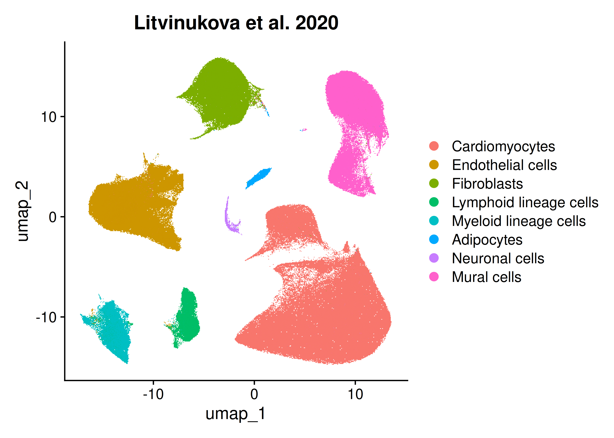
check_lncRNA_features(Litvinukova) lncRNA symbol ensembl matched_feature available
CM1 CM1 AC012574.2 ENSG00000254002 AC012574.2 TRUE
CM2 CM2 AL445307.1 ENSG00000228692 AL445307.1 TRUE
CM4 CM4 AL451069.1 ENSG00000226900 AL451069.1 TRUE
LINC02982 LINC02982 AC116351.1 ENSG00000215246 AC116351.1 TRUE
LINC01170 LINC01170 LINC01170 ENSG00000253807 LINC01170 TRUE
LINC00561 LINC00561 LINC00561 ENSG00000261206 LINC00561 TRUE
H19 H19 H19 ENSG00000130600 <NA> FALSELitvinukova_lncRNA_dot_data <- make_dotplot_data(
Litvinukova_simple,
Litvinukova_lncRNA_features,
"Litvinukova et al. 2020"
)
public_lncRNA_dotplots[["Litvinukova et al. 2020"]] <- Litvinukova_lncRNA_dot_data
Litvinukova_dotplot <- plot_dotplot_data(
Litvinukova_lncRNA_dot_data,
"Litvinukova et al. 2020"
)
Litvinukova_dotplot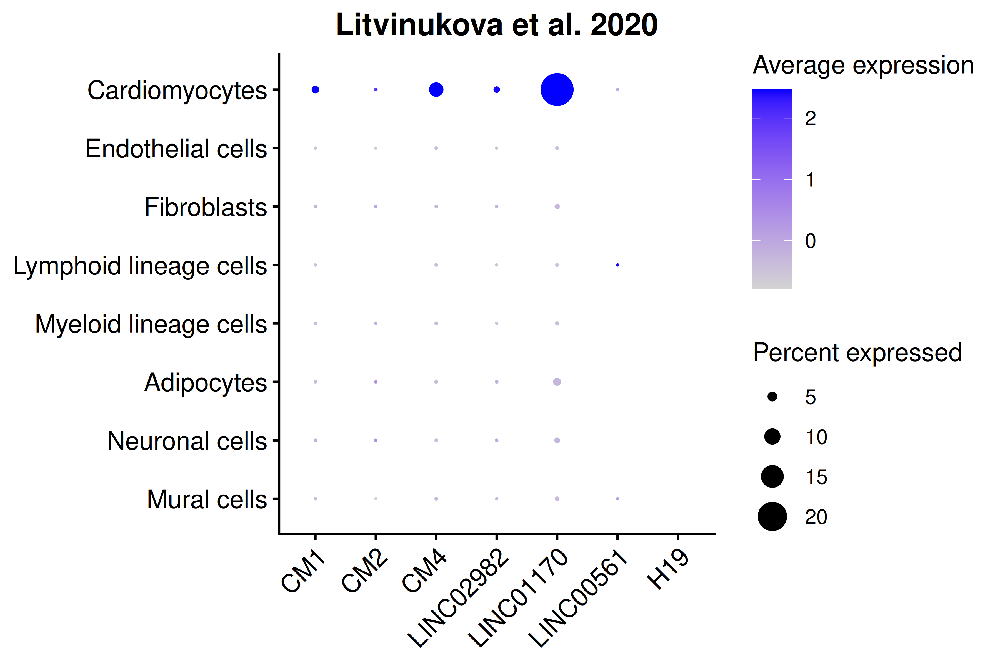
Litvinukova_marker_dot_data <- make_dotplot_data(
Litvinukova_simple,
marker_symbol,
"Litvinukova et al. 2020"
)
public_marker_dotplots[["Litvinukova et al. 2020"]] <- Litvinukova_marker_dot_data
plot_dotplot_data(Litvinukova_marker_dot_data, "Litvinukova et al. 2020 - cell-type markers")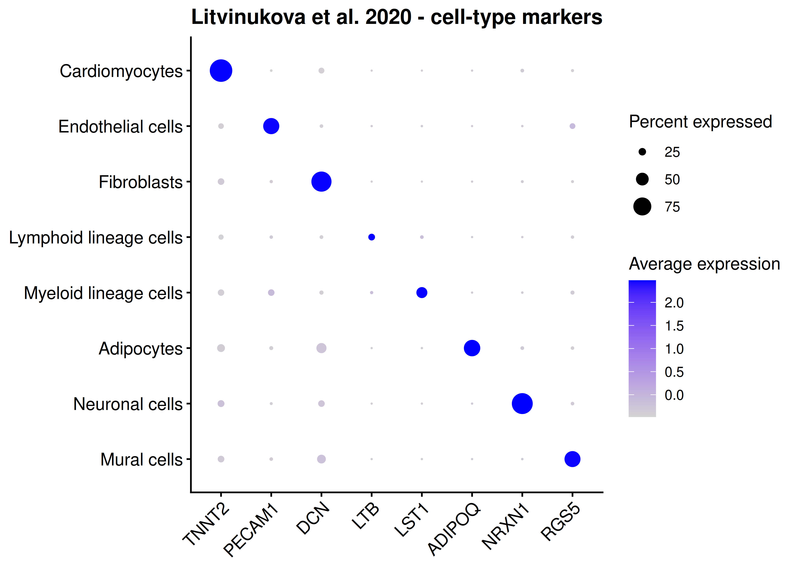
Litvinukova_vlnplot <- make_stacked_vlnplot(
Litvinukova_simple,
Litvinukova_lncRNA_features,
"Litvinukova et al. 2020",
alpha = 0.3
)
print(Litvinukova_vlnplot)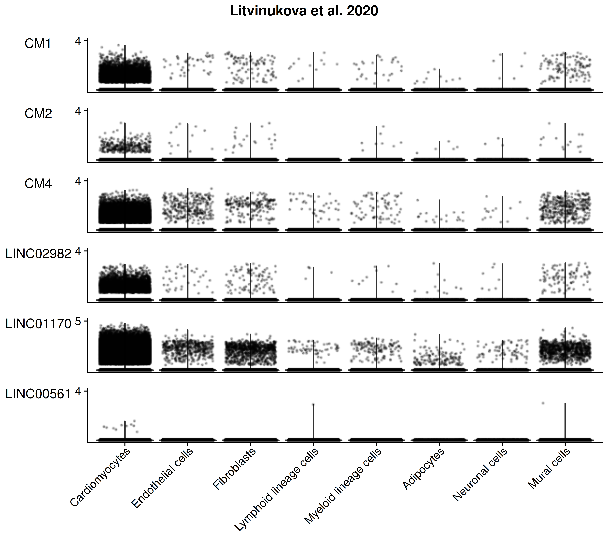
Litvinukova_featureplot <- make_featureplot(
Litvinukova,
Litvinukova_lncRNA_features,
"Litvinukova et al. 2020"
)
print(Litvinukova_featureplot)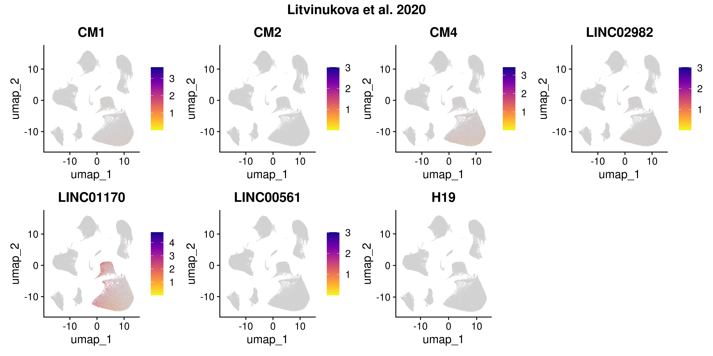
Litvinukova_subset_V <- subset(Litvinukova, cell_type == "Ventricular_Cardiomyocyte" & region %in% c("RV", "LV"))
Litvinukova_subset_A <- subset(Litvinukova, cell_type == "Atrial_Cardiomyocyte" & region %in% c("RA", "LA"))
Idents(Litvinukova_subset_V) <- Litvinukova_subset_V$region
Idents(Litvinukova_subset_A) <- Litvinukova_subset_A$region
Litvinukova_features_V <- get_available_features(Litvinukova_subset_V, Litvinukova_lncRNA_features)
Litvinukova_features_A <- get_available_features(Litvinukova_subset_A, Litvinukova_lncRNA_features)
Litvinukova_RV_vs_LV <- FindMarkers(Litvinukova_subset_V, ident.1 = "RV", ident.2 = "LV", features = unname(Litvinukova_features_V), logfc.threshold = 0, min.pct = 0.001)
Litvinukova_RV_vs_LV$gene <- rownames(Litvinukova_RV_vs_LV)
write.csv(Litvinukova_RV_vs_LV, here::here(output_dir_data, "Litvinukova_RV_vs_LV.csv"), row.names = FALSE)
Litvinukova_RA_vs_LA <- FindMarkers(Litvinukova_subset_A, ident.1 = "RA", ident.2 = "LA", features = unname(Litvinukova_features_A), logfc.threshold = 0, min.pct = 0.001)
Litvinukova_RA_vs_LA$gene <- rownames(Litvinukova_RA_vs_LA)
write.csv(Litvinukova_RA_vs_LA, here::here(output_dir_data, "Litvinukova_RA_vs_LA.csv"), row.names = FALSE)reactable(Litvinukova_RV_vs_LV,
filterable = TRUE,
searchable = TRUE,
showPageSizeOptions = TRUE)reactable(Litvinukova_RA_vs_LA,
filterable = TRUE,
searchable = TRUE,
showPageSizeOptions = TRUE)Litvinukova_dotplot_RV_vs_LV <- DotPlot(
Litvinukova_subset_V,
features = unname(Litvinukova_features_V),
group.by = "region",
scale = FALSE
)
Litvinukova_dotplot_RV_vs_LV$data <- Litvinukova_dotplot_RV_vs_LV$data %>%
dplyr::filter(!is.na(pct.exp) & pct.exp > 0)
Litvinukova_dotplot_RV_vs_LV <- Litvinukova_dotplot_RV_vs_LV +
scale_x_discrete(labels = setNames(names(Litvinukova_features_V), unname(Litvinukova_features_V))) +
theme(
axis.text.x = element_text(angle = 45, hjust = 1, size = 12),
axis.text.y = element_text(size = 12),
axis.title.x = element_blank(),
axis.title.y = element_blank()
) +
ggtitle("Litvinukova et al. 2020 - RV vs LV")
Litvinukova_dotplot_RV_vs_LV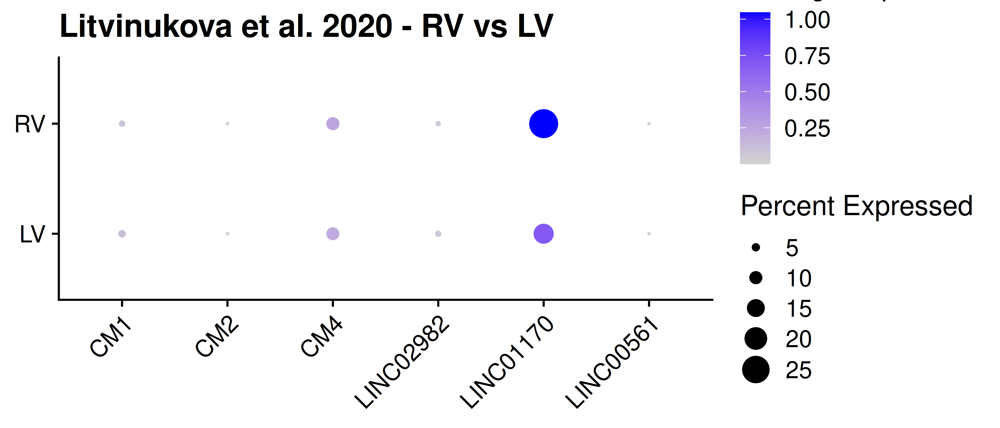
Litvinukova_dotplot_RA_vs_LA <- DotPlot(
Litvinukova_subset_A,
features = unname(Litvinukova_features_A),
group.by = "region",
scale = FALSE
)
Litvinukova_dotplot_RA_vs_LA$data <- Litvinukova_dotplot_RA_vs_LA$data %>%
dplyr::filter(!is.na(pct.exp) & pct.exp > 0)
Litvinukova_dotplot_RA_vs_LA <- Litvinukova_dotplot_RA_vs_LA +
scale_x_discrete(labels = setNames(names(Litvinukova_features_A), unname(Litvinukova_features_A))) +
theme(
axis.text.x = element_text(angle = 45, hjust = 1, size = 12),
axis.text.y = element_text(size = 12),
axis.title.x = element_blank(),
axis.title.y = element_blank()
) +
ggtitle("Litvinukova et al. 2020 - RA vs LA")
Litvinukova_dotplot_RA_vs_LA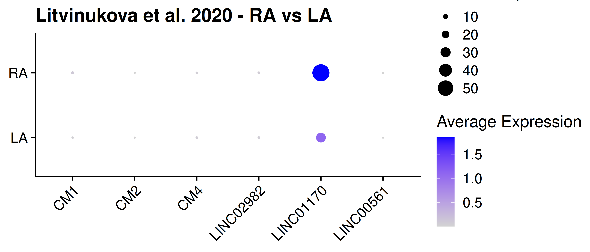
rm(Litvinukova, Litvinukova_simple)load(here::here("data", "Heart_datasets", "Koenig_2022", "GSE183852_DCM_Integrated.Robj"))
Koenig <- RefMerge
rm(RefMerge)
DefaultAssay(Koenig) <- "RNA"
Koenig <- NormalizeData(Koenig)
Koenig_lncRNA_features <- resolve_lncRNA_features(Koenig)
Koenig_lncRNA_to_display <- feature_display_map(Koenig_lncRNA_features)Koenig$cell_type_simple <- dplyr::case_when(
Koenig$Names %in% c("Cardiomyocytes") ~ "Cardiomyocytes",
Koenig$Names %in% c("Endothelium") ~ "Endothelial cells",
Koenig$Names %in% c("Fibroblasts") ~ "Fibroblasts",
Koenig$Names %in% c("B-Cells", "NK/T-Cells") ~ "Lymphoid lineage cells",
Koenig$Names %in% c("Myeloid", "Mast") ~ "Myeloid lineage cells",
Koenig$Names %in% c("Adipocytes") ~ "Adipocytes",
Koenig$Names %in% c("Neurons") ~ "Neuronal cells",
Koenig$Names %in% c("Smooth_Muscle", "Pericytes") ~ "Mural cells",
TRUE ~ NA_character_
)
Koenig$cell_type_simple <- factor(Koenig$cell_type_simple, levels = cell_type_order)
Koenig_simple <- subset(
Koenig,
cells = rownames(Koenig@meta.data)[!is.na(Koenig$cell_type_simple)]
)Koenig_dimplot <- DimPlot(Koenig_simple, group.by = "cell_type_simple") +
ggtitle("Koenig et al. 2022")
Koenig_dimplot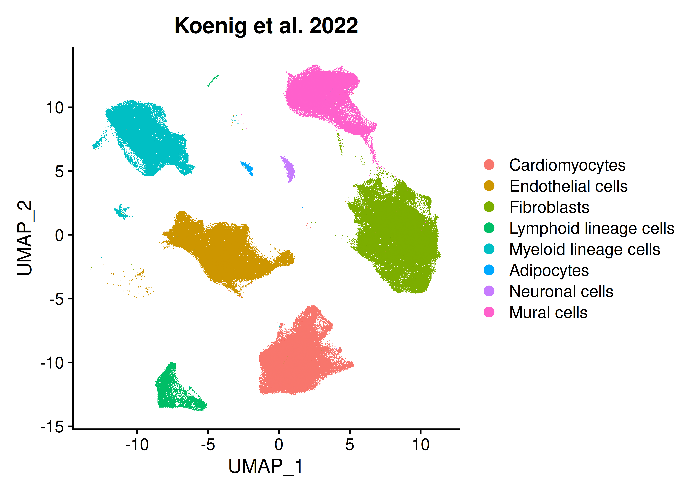
check_lncRNA_features(Koenig) lncRNA symbol ensembl matched_feature available
CM1 CM1 AC012574.2 ENSG00000254002 AC012574.2 TRUE
CM2 CM2 AL445307.1 ENSG00000228692 AL445307.1 TRUE
CM4 CM4 AL451069.1 ENSG00000226900 AL451069.1 TRUE
LINC02982 LINC02982 AC116351.1 ENSG00000215246 AC116351.1 TRUE
LINC01170 LINC01170 LINC01170 ENSG00000253807 LINC01170 TRUE
LINC00561 LINC00561 LINC00561 ENSG00000261206 LINC00561 TRUE
H19 H19 H19 ENSG00000130600 <NA> FALSEKoenig_lncRNA_dot_data <- make_dotplot_data(
Koenig_simple,
Koenig_lncRNA_features,
"Koenig et al. 2022"
)
public_lncRNA_dotplots[["Koenig et al. 2022"]] <- Koenig_lncRNA_dot_data
Koenig_dotplot <- plot_dotplot_data(Koenig_lncRNA_dot_data, "Koenig et al. 2022")
Koenig_dotplot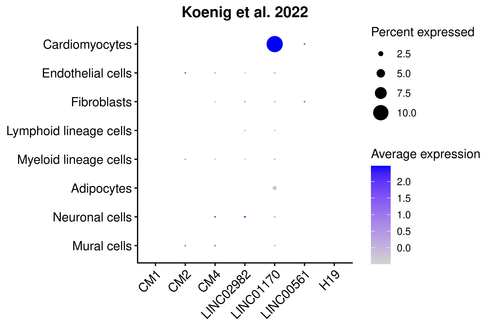
Koenig_marker_dot_data <- make_dotplot_data(
Koenig_simple,
marker_symbol,
"Koenig et al. 2022"
)
public_marker_dotplots[["Koenig et al. 2022"]] <- Koenig_marker_dot_data
plot_dotplot_data(Koenig_marker_dot_data, "Koenig et al. 2022 - cell-type markers")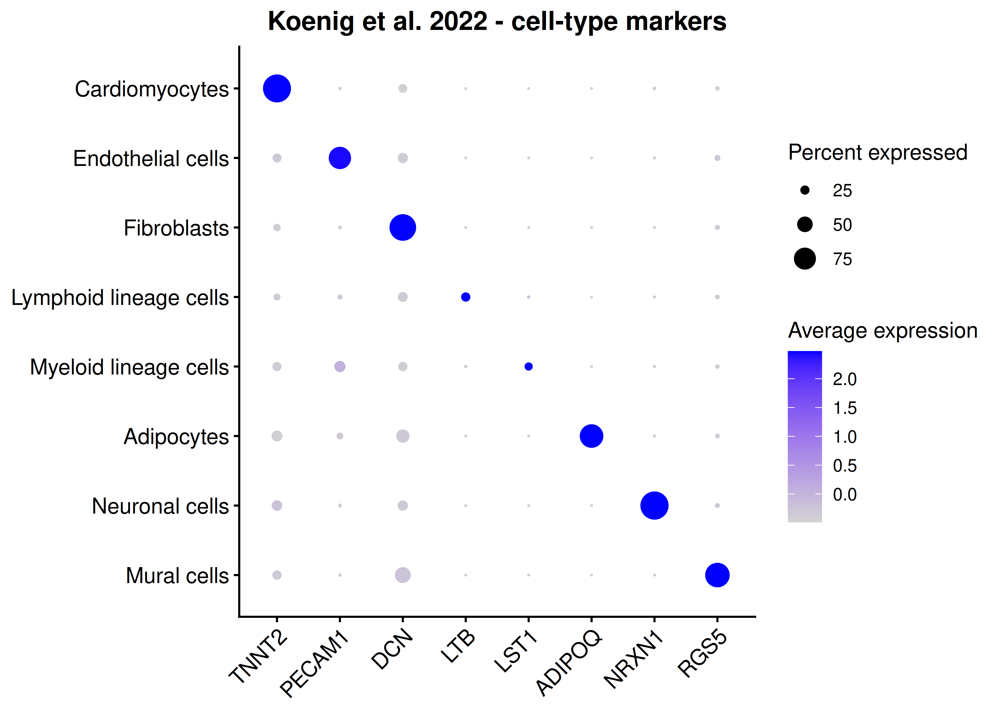
Koenig_vlnplot <- make_stacked_vlnplot(
Koenig_simple,
Koenig_lncRNA_features,
"Koenig et al. 2022",
alpha = 0.2
)
print(Koenig_vlnplot)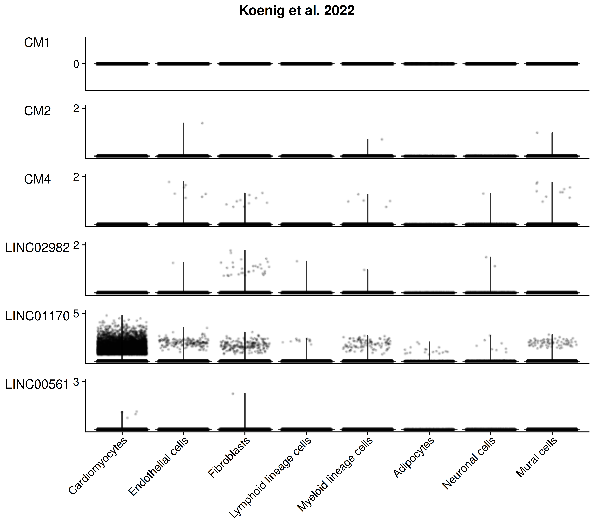
Koenig_featureplot <- make_featureplot(
Koenig,
Koenig_lncRNA_features,
"Koenig et al. 2022"
)
print(Koenig_featureplot)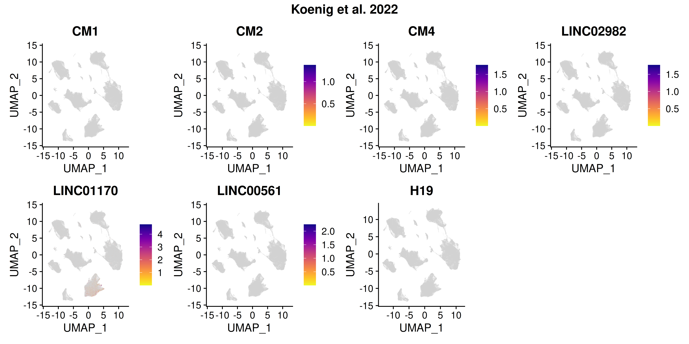
Koenig_CM <- subset(Koenig, Names %in% c("Cardiomyocytes") & CondTech %in% c("DCM_SN", "Donor_SN"))
metadata <- Koenig_CM@meta.data %>%
dplyr::select(orig.ident, condition) %>%
dplyr::distinct()
rownames(metadata) <- metadata$orig.ident
reactable(metadata,
filterable = TRUE,
searchable = TRUE,
showPageSizeOptions = TRUE)# Build pseudobulk using all genes. Formal DE filtering is done only with filterByExpr.
pseudocounts_all <- Seurat2PB(Koenig_CM, sample = "orig.ident", cluster = "Names")
colnames(pseudocounts_all) <- pseudocounts_all$samples$sample
pseudocounts_all <- pseudocounts_all[, match(metadata$orig.ident, pseudocounts_all$samples$sample)]
stopifnot(all(metadata$orig.ident == pseudocounts_all$samples$sample))
keep_samples <- pseudocounts_all$samples$lib.size > 5e4
pseudocounts_all <- pseudocounts_all[, keep_samples]
metadata <- metadata[match(pseudocounts_all$samples$sample, metadata$orig.ident), , drop = FALSE]
stopifnot(all(metadata$orig.ident == pseudocounts_all$samples$sample))
metadata$condition <- factor(metadata$condition, levels = c("Donor", "DCM"))
design <- model.matrix(~ condition, data = metadata)
keep_genes <- edgeR::filterByExpr(pseudocounts_all, design = design)
pseudocounts <- pseudocounts_all[keep_genes, , keep.lib.sizes = FALSE]
Koenig_tested <- data.frame(
gene = names(Koenig_lncRNA_features),
feature = unname(Koenig_lncRNA_features),
tested = !is.na(unname(Koenig_lncRNA_features)) &
unname(Koenig_lncRNA_features) %in% rownames(pseudocounts)
)
Koenig_tested gene feature tested
1 CM1 AC012574.2 FALSE
2 CM2 AL445307.1 FALSE
3 CM4 AL451069.1 FALSE
4 LINC02982 AC116351.1 FALSE
5 LINC01170 LINC01170 TRUE
6 LINC00561 LINC00561 FALSE
7 H19 <NA> FALSEpseudocounts <- edgeR::normLibSizes(pseudocounts)
pseudocounts <- edgeR::estimateDisp(pseudocounts, design)
fit <- edgeR::glmQLFit(pseudocounts, design, robust = TRUE)
fit <- edgeR::glmQLFTest(fit, coef = 2)
results_Koenig <- as.data.frame(edgeR::topTags(fit, n = Inf)$table)
results_Koenig$gene <- rownames(results_Koenig)
results_Koenig$up_down <- ifelse(
results_Koenig$logFC > 0.5 & results_Koenig$FDR < 0.05, "Increased",
ifelse(
results_Koenig$logFC < -0.5 & results_Koenig$FDR < 0.05,
"Decreased",
"Not significant"
)
)
results_Koenig_lncRNA <- results_Koenig %>%
dplyr::filter(gene %in% names(Koenig_lncRNA_to_display)) %>%
dplyr::mutate(lncRNA = unname(Koenig_lncRNA_to_display[gene]))
write.csv(
results_Koenig_lncRNA,
here::here(output_dir_data, "Koenig_DCM_vs_HC.csv"),
row.names = FALSE
)
reactable(
results_Koenig_lncRNA,
filterable = TRUE,
searchable = TRUE,
showPageSizeOptions = TRUE
)counts <- edgeR::cpm(pseudocounts, log = TRUE)
candidate_order <- unname(Koenig_lncRNA_features[!is.na(Koenig_lncRNA_features)])
candidate_order <- candidate_order[candidate_order %in% rownames(counts)]
counts <- counts[candidate_order, , drop = FALSE]
metadata_matched <- metadata[match(colnames(counts), metadata$orig.ident), , drop = FALSE]
stopifnot(all(colnames(counts) == metadata_matched$orig.ident))
order_idx <- order(metadata_matched$condition)
counts <- counts[, order_idx, drop = FALSE]
metadata_matched <- metadata_matched[order_idx, , drop = FALSE]
rownames(counts) <- unname(Koenig_lncRNA_to_display[rownames(counts)])
annotation_col <- data.frame(condition = metadata_matched$condition)
rownames(annotation_col) <- metadata_matched$orig.ident
heat_colors <- rev(brewer.pal(11, "PuOr"))
pheatmap::pheatmap(
counts,
color = heat_colors,
cluster_rows = FALSE,
annotation_col = annotation_col,
border_color = NA,
fontsize = 10,
scale = "row",
cluster_cols = FALSE,
fontsize_row = 15,
show_rownames = TRUE,
show_colnames = FALSE,
cellheight = 15,
legend_breaks = c(-1.5, 0, 1.5),
main = "Koenig et al. 2022 - LV"
)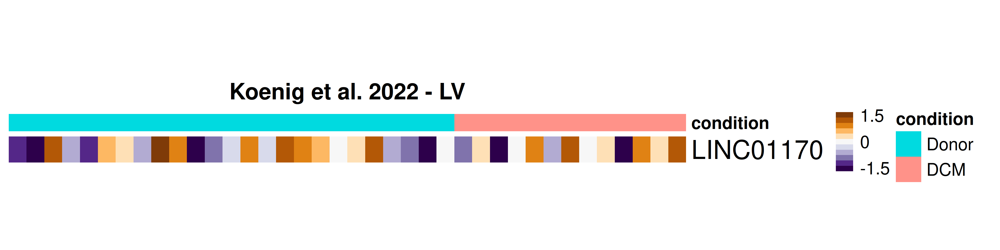
Koenig_box_data <- make_pseudobulk_box_data(
pseudocounts_all,
metadata,
sample_col = "orig.ident",
group_col = "condition",
features = Koenig_lncRNA_features
)
Koenig_box_data$group <- factor(Koenig_box_data$group, levels = c("Donor", "DCM"))
Koenig_stats <- results_Koenig_lncRNA %>%
dplyr::transmute(
gene = lncRNA,
group1 = "Donor",
group2 = "DCM",
FDR = FDR
)
Koenig_stats <- prepare_fdr_annotations(Koenig_stats, Koenig_box_data)
plot_pseudobulk_boxplots(
Koenig_box_data,
Koenig_stats,
title = "Koenig et al. 2022 - LV",
ncol = 2
)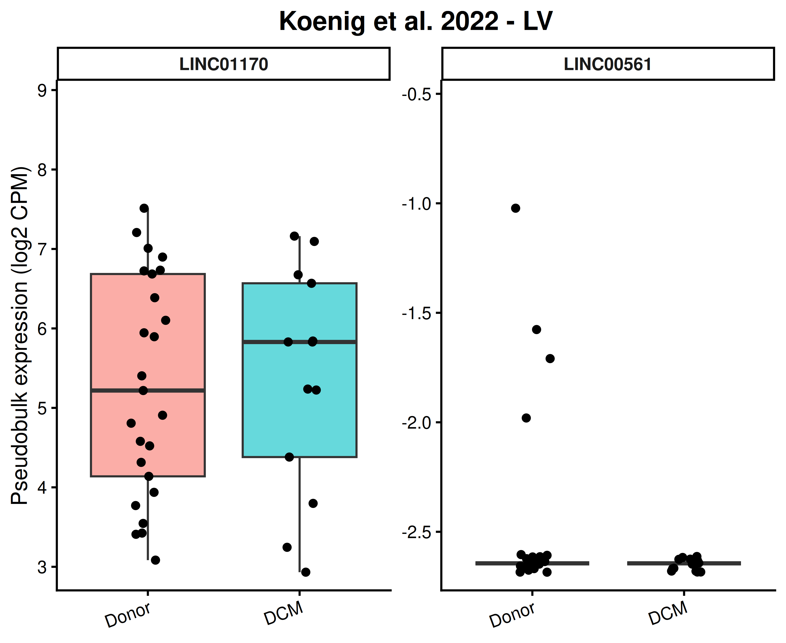
rm(Koenig, Koenig_simple)Chaffin <- readRDS(here::here("data", "Heart_datasets", "Chaffin_2022", "Chaffin.rds"))
Chaffin <- RenameAssays(
object = Chaffin,
originalexp = "RNA"
)
DefaultAssay(Chaffin) <- "RNA"
Chaffin <- NormalizeData(Chaffin)
Chaffin_lncRNA_features <- resolve_lncRNA_features(Chaffin)
Chaffin_lncRNA_to_display <- feature_display_map(Chaffin_lncRNA_features)Chaffin$cell_type_simple <- dplyr::case_when(
Chaffin$cell_type_leiden0.6 %in% c("Cardiomyocyte_I", "Cardiomyocyte_II", "Cardiomyocyte_III") ~ "Cardiomyocytes",
Chaffin$cell_type_leiden0.6 %in% c("Endothelial_I", "Endothelial_II", "Endothelial_III") ~ "Endothelial cells",
Chaffin$cell_type_leiden0.6 %in% c("Fibroblast_I", "Fibroblast_II") ~ "Fibroblasts",
Chaffin$cell_type_leiden0.6 %in% c("Lymphocyte") ~ "Lymphoid lineage cells",
Chaffin$cell_type_leiden0.6 %in% c("Macrophage", "Proliferating_macrophage", "Mast_cell") ~ "Myeloid lineage cells",
Chaffin$cell_type_leiden0.6 %in% c("Adipocyte") ~ "Adipocytes",
Chaffin$cell_type_leiden0.6 %in% c("Neuronal") ~ "Neuronal cells",
Chaffin$cell_type_leiden0.6 %in% c("Pericyte_I", "Pericyte_II", "VSMC") ~ "Mural cells",
TRUE ~ NA_character_
)
# Activated_fibroblast is intentionally excluded, following Marta's requested grouping.
Chaffin$cell_type_simple <- factor(Chaffin$cell_type_simple, levels = cell_type_order)
Chaffin_simple <- subset(
Chaffin,
cells = rownames(Chaffin@meta.data)[!is.na(Chaffin$cell_type_simple)]
)Chaffin_dimplot <- DimPlot(Chaffin_simple, group.by = "cell_type_simple") +
ggtitle("Chaffin et al. 2022")
Chaffin_dimplot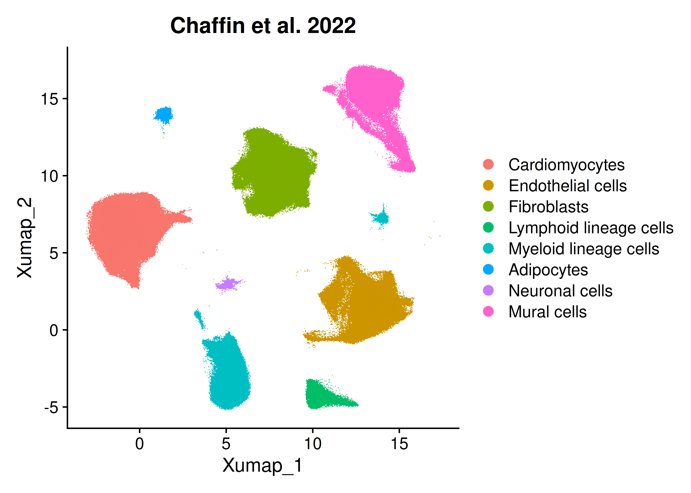
check_lncRNA_features(Chaffin) lncRNA symbol ensembl matched_feature available
CM1 CM1 AC012574.2 ENSG00000254002 AC012574.2 TRUE
CM2 CM2 AL445307.1 ENSG00000228692 AL445307.1 TRUE
CM4 CM4 AL451069.1 ENSG00000226900 AL451069.1 TRUE
LINC02982 LINC02982 AC116351.1 ENSG00000215246 AC116351.1 TRUE
LINC01170 LINC01170 LINC01170 ENSG00000253807 LINC01170 TRUE
LINC00561 LINC00561 LINC00561 ENSG00000261206 LINC00561 TRUE
H19 H19 H19 ENSG00000130600 H19 TRUEChaffin_lncRNA_dot_data <- make_dotplot_data(
Chaffin_simple,
Chaffin_lncRNA_features,
"Chaffin et al. 2022"
)
public_lncRNA_dotplots[["Chaffin et al. 2022"]] <- Chaffin_lncRNA_dot_data
Chaffin_dotplot <- plot_dotplot_data(Chaffin_lncRNA_dot_data, "Chaffin et al. 2022")
Chaffin_dotplot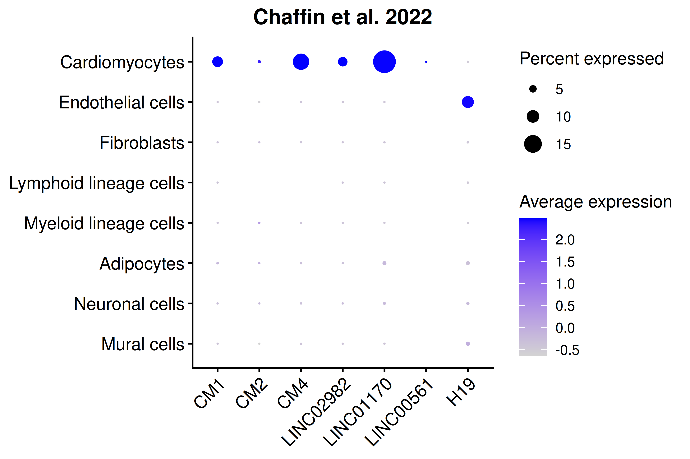
Chaffin_marker_dot_data <- make_dotplot_data(
Chaffin_simple,
marker_symbol,
"Chaffin et al. 2022"
)
public_marker_dotplots[["Chaffin et al. 2022"]] <- Chaffin_marker_dot_data
plot_dotplot_data(Chaffin_marker_dot_data, "Chaffin et al. 2022 - cell-type markers")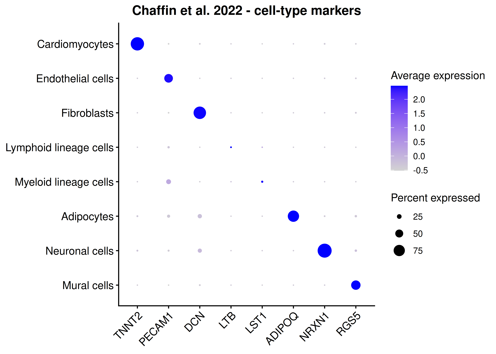
Chaffin_vlnplot <- make_stacked_vlnplot(
Chaffin_simple,
Chaffin_lncRNA_features,
"Chaffin et al. 2022",
alpha = 0.3
)
print(Chaffin_vlnplot)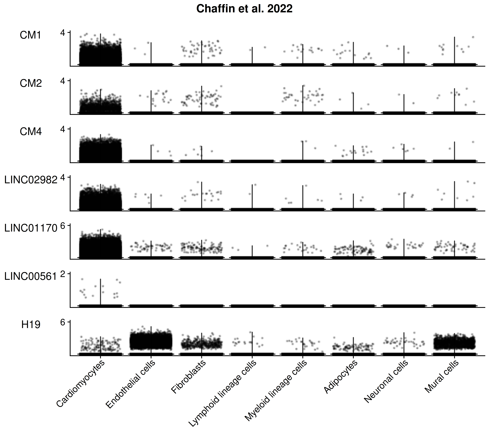
Chaffin_featureplot <- make_featureplot(
Chaffin,
Chaffin_lncRNA_features,
"Chaffin et al. 2022"
)
print(Chaffin_featureplot)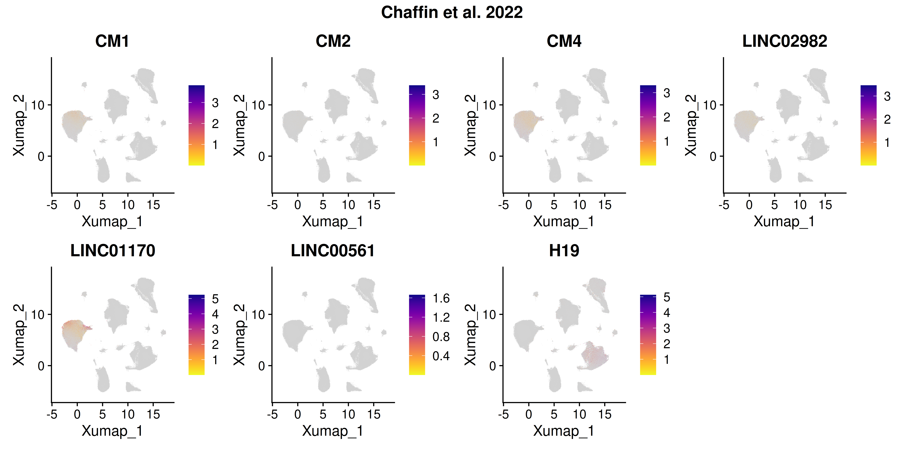
Chaffin_CM <- subset(Chaffin, cell_type_leiden0.6 %in% c("Cardiomyocyte_I", "Cardiomyocyte_II", "Cardiomyocyte_III"))
Chaffin_CM$cell_type <- "Cardiomyocytes"
metadata <- Chaffin_CM@meta.data %>%
dplyr::select(donor_id, disease) %>%
dplyr::distinct()
rownames(metadata) <- metadata$donor_id
reactable(metadata,
filterable = TRUE,
searchable = TRUE,
showPageSizeOptions = TRUE)# Build pseudobulk using all genes. Formal DE filtering is done only with filterByExpr.
pseudocounts_all <- Seurat2PB(Chaffin_CM, sample = "donor_id", cluster = "cell_type")
colnames(pseudocounts_all) <- pseudocounts_all$samples$sample
pseudocounts_all <- pseudocounts_all[, match(metadata$donor_id, pseudocounts_all$samples$sample)]
stopifnot(all(metadata$donor_id == pseudocounts_all$samples$sample))
keep_samples <- pseudocounts_all$samples$lib.size > 5e4
pseudocounts_all <- pseudocounts_all[, keep_samples]
metadata <- metadata[match(pseudocounts_all$samples$sample, metadata$donor_id), , drop = FALSE]
stopifnot(all(metadata$donor_id == pseudocounts_all$samples$sample))
metadata$disease <- factor(metadata$disease, levels = c("NF", "DCM", "HCM"))
design <- model.matrix(~ disease, data = metadata)
keep_genes <- edgeR::filterByExpr(pseudocounts_all, design = design)
pseudocounts <- pseudocounts_all[keep_genes, , keep.lib.sizes = FALSE]
Chaffin_tested <- data.frame(
gene = names(Chaffin_lncRNA_features),
feature = unname(Chaffin_lncRNA_features),
tested = !is.na(unname(Chaffin_lncRNA_features)) &
unname(Chaffin_lncRNA_features) %in% rownames(pseudocounts)
)
Chaffin_tested gene feature tested
1 CM1 AC012574.2 TRUE
2 CM2 AL445307.1 TRUE
3 CM4 AL451069.1 TRUE
4 LINC02982 AC116351.1 TRUE
5 LINC01170 LINC01170 TRUE
6 LINC00561 LINC00561 FALSE
7 H19 H19 FALSEpseudocounts <- edgeR::normLibSizes(pseudocounts)
pseudocounts <- edgeR::estimateDisp(pseudocounts, design)
fit <- edgeR::glmQLFit(pseudocounts, design, robust = TRUE)
contrast_DCM_vs_NF <- limma::makeContrasts(diseaseDCM, levels = design)
results_Chaffin_DCM_vs_NF <- edgeR::glmQLFTest(fit, contrast = contrast_DCM_vs_NF)
results_Chaffin_DCM_vs_NF <- as.data.frame(edgeR::topTags(results_Chaffin_DCM_vs_NF, n = Inf)$table)
results_Chaffin_DCM_vs_NF$gene <- rownames(results_Chaffin_DCM_vs_NF)
results_Chaffin_DCM_vs_NF$up_down <- ifelse(
results_Chaffin_DCM_vs_NF$logFC > 0.5 & results_Chaffin_DCM_vs_NF$FDR < 0.05, "Increased",
ifelse(
results_Chaffin_DCM_vs_NF$logFC < -0.5 & results_Chaffin_DCM_vs_NF$FDR < 0.05,
"Decreased",
"Not significant"
)
)
results_Chaffin_DCM_vs_NF_lncRNA <- results_Chaffin_DCM_vs_NF %>%
dplyr::filter(gene %in% names(Chaffin_lncRNA_to_display)) %>%
dplyr::mutate(
lncRNA = unname(Chaffin_lncRNA_to_display[gene]),
Contrast = "DCM_vs_NF"
)
write.csv(
results_Chaffin_DCM_vs_NF_lncRNA,
here::here(output_dir_data, "Chaffin_DCM_vs_HC.csv"),
row.names = FALSE
)
contrast_HCM_vs_NF <- limma::makeContrasts(diseaseHCM, levels = design)
results_Chaffin_HCM_vs_NF <- edgeR::glmQLFTest(fit, contrast = contrast_HCM_vs_NF)
results_Chaffin_HCM_vs_NF <- as.data.frame(edgeR::topTags(results_Chaffin_HCM_vs_NF, n = Inf)$table)
results_Chaffin_HCM_vs_NF$gene <- rownames(results_Chaffin_HCM_vs_NF)
results_Chaffin_HCM_vs_NF$up_down <- ifelse(
results_Chaffin_HCM_vs_NF$logFC > 0.5 & results_Chaffin_HCM_vs_NF$FDR < 0.05, "Increased",
ifelse(
results_Chaffin_HCM_vs_NF$logFC < -0.5 & results_Chaffin_HCM_vs_NF$FDR < 0.05,
"Decreased",
"Not significant"
)
)
results_Chaffin_HCM_vs_NF_lncRNA <- results_Chaffin_HCM_vs_NF %>%
dplyr::filter(gene %in% names(Chaffin_lncRNA_to_display)) %>%
dplyr::mutate(
lncRNA = unname(Chaffin_lncRNA_to_display[gene]),
Contrast = "HCM_vs_NF"
)
write.csv(
results_Chaffin_HCM_vs_NF_lncRNA,
here::here(output_dir_data, "Chaffin_HCM_vs_HC.csv"),
row.names = FALSE
)
contrast_DCM_vs_HCM <- limma::makeContrasts(diseaseDCM - diseaseHCM, levels = design)
results_Chaffin_DCM_vs_HCM <- edgeR::glmQLFTest(fit, contrast = contrast_DCM_vs_HCM)
results_Chaffin_DCM_vs_HCM <- as.data.frame(edgeR::topTags(results_Chaffin_DCM_vs_HCM, n = Inf)$table)
results_Chaffin_DCM_vs_HCM$gene <- rownames(results_Chaffin_DCM_vs_HCM)
results_Chaffin_DCM_vs_HCM$up_down <- ifelse(
results_Chaffin_DCM_vs_HCM$logFC > 0.5 & results_Chaffin_DCM_vs_HCM$FDR < 0.05, "Increased",
ifelse(
results_Chaffin_DCM_vs_HCM$logFC < -0.5 & results_Chaffin_DCM_vs_HCM$FDR < 0.05,
"Decreased",
"Not significant"
)
)
results_Chaffin_DCM_vs_HCM_lncRNA <- results_Chaffin_DCM_vs_HCM %>%
dplyr::filter(gene %in% names(Chaffin_lncRNA_to_display)) %>%
dplyr::mutate(
lncRNA = unname(Chaffin_lncRNA_to_display[gene]),
Contrast = "DCM_vs_HCM"
)
write.csv(
results_Chaffin_DCM_vs_HCM_lncRNA,
here::here(output_dir_data, "Chaffin_DCM_vs_HCM.csv"),
row.names = FALSE
)
reactable(
results_Chaffin_DCM_vs_NF_lncRNA,
filterable = TRUE,
searchable = TRUE,
showPageSizeOptions = TRUE
)reactable(
results_Chaffin_HCM_vs_NF_lncRNA,
filterable = TRUE,
searchable = TRUE,
showPageSizeOptions = TRUE
)reactable(
results_Chaffin_DCM_vs_HCM_lncRNA,
filterable = TRUE,
searchable = TRUE,
showPageSizeOptions = TRUE
)counts <- edgeR::cpm(pseudocounts, log = TRUE)
candidate_order <- unname(Chaffin_lncRNA_features[!is.na(Chaffin_lncRNA_features)])
candidate_order <- candidate_order[candidate_order %in% rownames(counts)]
counts <- counts[candidate_order, , drop = FALSE]
metadata_matched <- metadata[match(colnames(counts), metadata$donor_id), , drop = FALSE]
stopifnot(all(colnames(counts) == metadata_matched$donor_id))
order_idx <- order(metadata_matched$disease)
counts <- counts[, order_idx, drop = FALSE]
metadata_matched <- metadata_matched[order_idx, , drop = FALSE]
rownames(counts) <- unname(Chaffin_lncRNA_to_display[rownames(counts)])
annotation_col <- data.frame(disease = metadata_matched$disease)
rownames(annotation_col) <- metadata_matched$donor_id
heat_colors <- rev(brewer.pal(11, "PuOr"))
pheatmap::pheatmap(
counts,
color = heat_colors,
cluster_rows = FALSE,
cluster_cols = FALSE,
annotation_col = annotation_col,
border_color = NA,
fontsize = 10,
scale = "row",
fontsize_row = 15,
show_rownames = TRUE,
show_colnames = FALSE,
cellheight = 15,
legend_breaks = c(-1.5, 0, 1.5),
main = "Chaffin et al. 2022 - LV"
)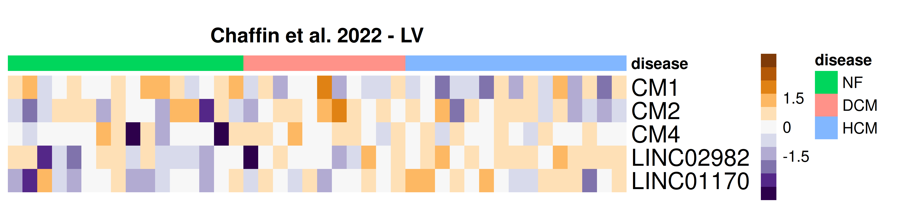
Chaffin_box_data <- make_pseudobulk_box_data(
pseudocounts_all,
metadata,
sample_col = "donor_id",
group_col = "disease",
features = Chaffin_lncRNA_features
)
Chaffin_box_data$group <- factor(Chaffin_box_data$group, levels = c("NF", "DCM", "HCM"))
Chaffin_stats <- dplyr::bind_rows(
results_Chaffin_DCM_vs_NF_lncRNA %>%
dplyr::transmute(gene = lncRNA, group1 = "NF", group2 = "DCM", FDR = FDR),
results_Chaffin_HCM_vs_NF_lncRNA %>%
dplyr::transmute(gene = lncRNA, group1 = "NF", group2 = "HCM", FDR = FDR),
results_Chaffin_DCM_vs_HCM_lncRNA %>%
dplyr::transmute(gene = lncRNA, group1 = "DCM", group2 = "HCM", FDR = FDR)
)
Chaffin_stats <- prepare_fdr_annotations(Chaffin_stats, Chaffin_box_data)
plot_pseudobulk_boxplots(
Chaffin_box_data,
Chaffin_stats,
title = "Chaffin et al. 2022 - LV",
ncol = 4
)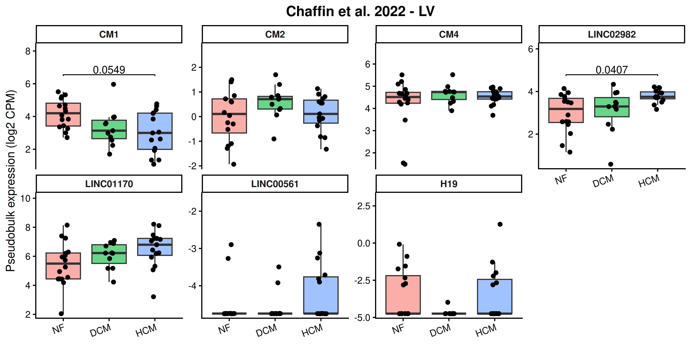
rm(Chaffin, Chaffin_simple)Reichart <- qs_read(here::here("data", "Heart_datasets", "Reichart_2022", "Reichart_2022.qs2"))
DefaultAssay(Reichart) <- "RNA"
Reichart <- NormalizeData(Reichart)
Reichart_lncRNA_features <- resolve_lncRNA_features(Reichart)
Reichart_lncRNA_to_display <- feature_display_map(Reichart_lncRNA_features)Reichart$cell_type_simple <- dplyr::case_when(
Reichart$cell_type %in% c("cardiac muscle cell") ~ "Cardiomyocytes",
Reichart$cell_type %in% c("endothelial cell") ~ "Endothelial cells",
Reichart$cell_type %in% c("fibroblast of cardiac tissue") ~ "Fibroblasts",
Reichart$cell_type %in% c("lymphocyte") ~ "Lymphoid lineage cells",
Reichart$cell_type %in% c("myeloid cell", "mast cell") ~ "Myeloid lineage cells",
Reichart$cell_type %in% c("adipocyte") ~ "Adipocytes",
Reichart$cell_type %in% c("cardiac neuron") ~ "Neuronal cells",
Reichart$cell_type %in% c("mural cell") ~ "Mural cells",
TRUE ~ NA_character_
)
Reichart$cell_type_simple <- factor(Reichart$cell_type_simple, levels = cell_type_order)
Reichart_simple <- subset(
Reichart,
cells = rownames(Reichart@meta.data)[!is.na(Reichart$cell_type_simple)]
)Reichart_dimplot <- DimPlot(Reichart_simple, group.by = "cell_type_simple") +
ggtitle("Reichart et al. 2022")
Reichart_dimplot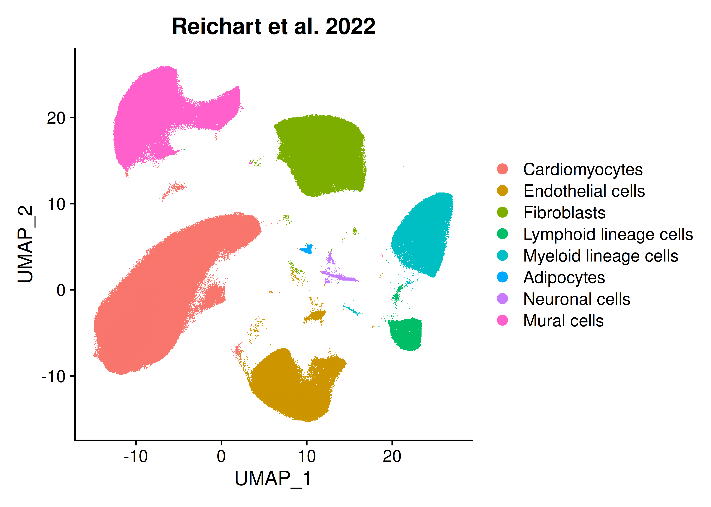
check_lncRNA_features(Reichart) lncRNA symbol ensembl matched_feature available
CM1 CM1 AC012574.2 ENSG00000254002 ENSG00000254002 TRUE
CM2 CM2 AL445307.1 ENSG00000228692 ENSG00000228692 TRUE
CM4 CM4 AL451069.1 ENSG00000226900 ENSG00000226900 TRUE
LINC02982 LINC02982 AC116351.1 ENSG00000215246 ENSG00000215246 TRUE
LINC01170 LINC01170 LINC01170 ENSG00000253807 ENSG00000253807 TRUE
LINC00561 LINC00561 LINC00561 ENSG00000261206 ENSG00000261206 TRUE
H19 H19 H19 ENSG00000130600 <NA> FALSEReichart_lncRNA_dot_data <- make_dotplot_data(
Reichart_simple,
Reichart_lncRNA_features,
"Reichart et al. 2022"
)
public_lncRNA_dotplots[["Reichart et al. 2022"]] <- Reichart_lncRNA_dot_data
Reichart_dotplot <- plot_dotplot_data(Reichart_lncRNA_dot_data, "Reichart et al. 2022")
Reichart_dotplot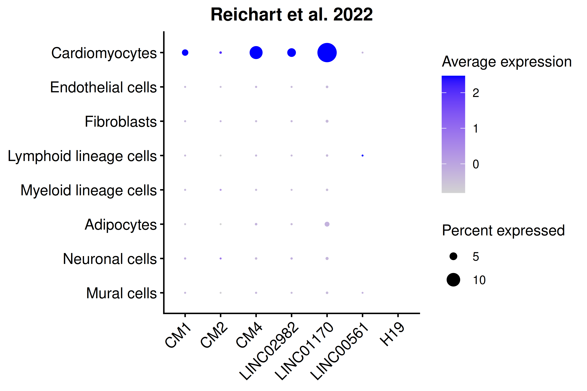
Reichart_marker_dot_data <- make_dotplot_data(
Reichart_simple,
marker_ens,
"Reichart et al. 2022"
)
public_marker_dotplots[["Reichart et al. 2022"]] <- Reichart_marker_dot_data
plot_dotplot_data(Reichart_marker_dot_data, "Reichart et al. 2022 - cell-type markers")Reichart_vlnplot <- make_stacked_vlnplot(
Reichart_simple,
Reichart_lncRNA_features,
"Reichart et al. 2022",
alpha = 0.1
)
print(Reichart_vlnplot)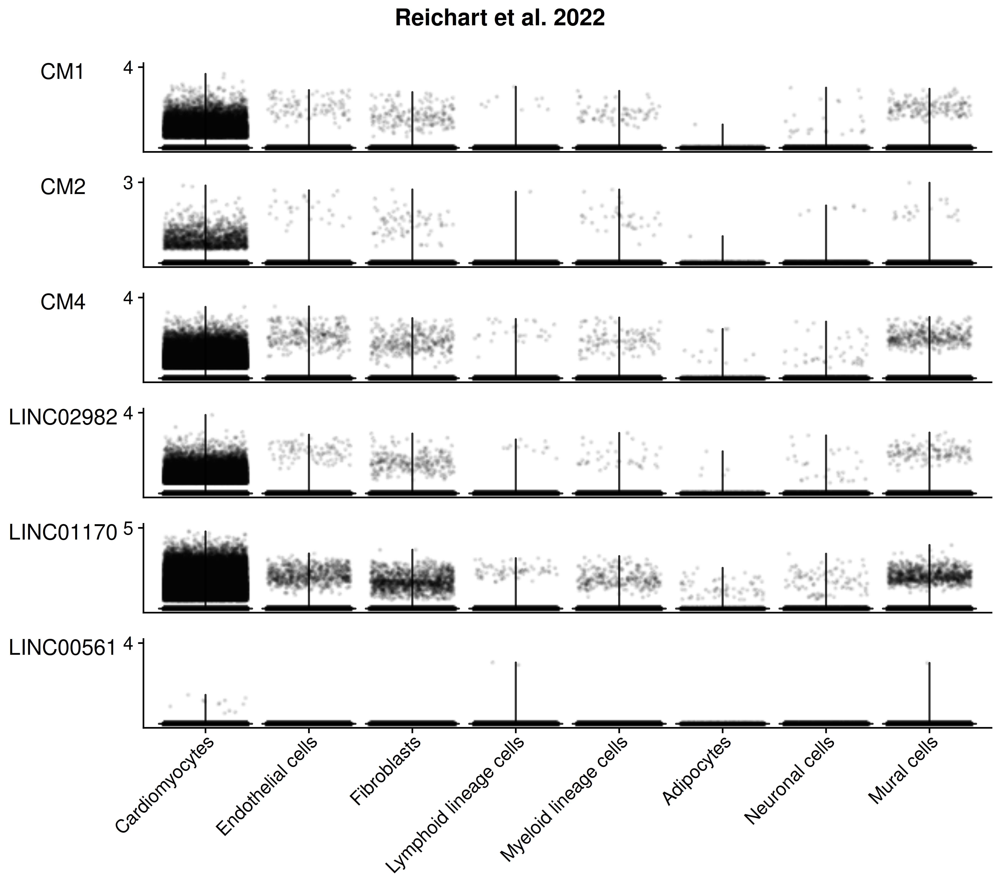
Reichart_featureplot <- make_featureplot(
Reichart,
Reichart_lncRNA_features,
"Reichart et al. 2022"
)
print(Reichart_featureplot)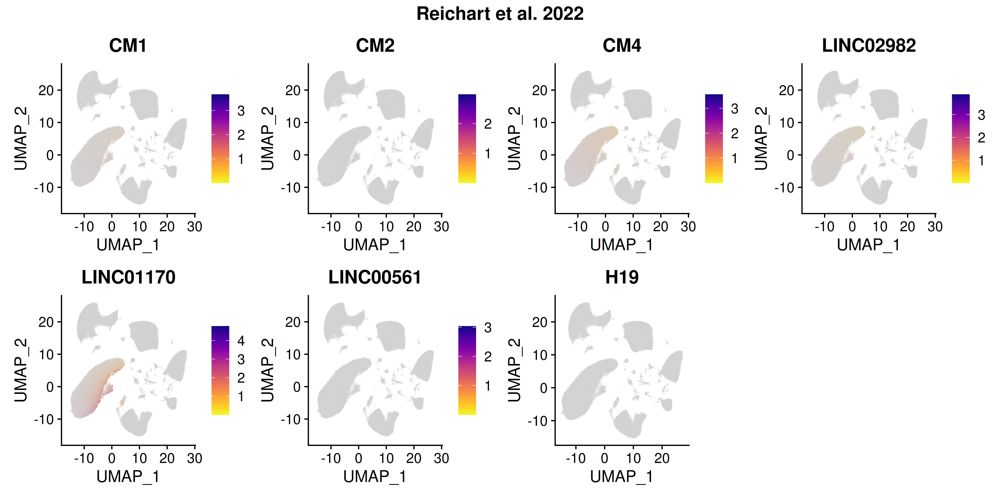
Reichart_subset_V <- subset(
Reichart,
cell_type == "cardiac muscle cell" & Region_x %in% c("RV", "LV")
)
Idents(Reichart_subset_V) <- Reichart_subset_V$Region_x
Reichart_features_V <- get_available_features(Reichart_subset_V, Reichart_lncRNA_features)
Reichart_RV_vs_LV <- FindMarkers(
Reichart_subset_V,
ident.1 = "RV",
ident.2 = "LV",
features = unname(Reichart_features_V),
logfc.threshold = 0,
min.pct = 0.001
)
Reichart_RV_vs_LV$gene <- rownames(Reichart_RV_vs_LV)
write.csv(
Reichart_RV_vs_LV,
here::here(output_dir_data, "Reichart_RV_vs_LV.csv"),
row.names = FALSE
)reactable(
Reichart_RV_vs_LV,
filterable = TRUE,
searchable = TRUE,
showPageSizeOptions = TRUE
)Reichart_dotplot_RV_vs_LV <- DotPlot(
Reichart_subset_V,
features = unname(Reichart_features_V),
group.by = "Region_x",
scale = FALSE
)
Reichart_dotplot_RV_vs_LV$data <- Reichart_dotplot_RV_vs_LV$data %>%
dplyr::filter(!is.na(pct.exp) & pct.exp > 0)
Reichart_dotplot_RV_vs_LV <- Reichart_dotplot_RV_vs_LV +
scale_x_discrete(labels = setNames(names(Reichart_features_V), unname(Reichart_features_V))) +
theme(
axis.text.x = element_text(angle = 45, hjust = 1, size = 12),
axis.text.y = element_text(size = 12),
axis.title.x = element_blank(),
axis.title.y = element_blank()
) +
ggtitle("Reichart et al. 2022 - RV vs LV")
Reichart_dotplot_RV_vs_LV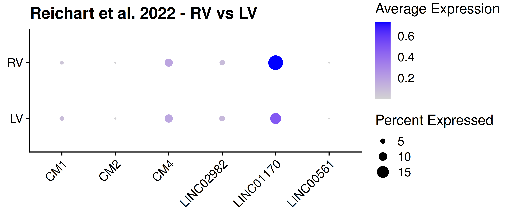
Reichart_CM_RV <- subset(
Reichart,
cell_type %in% c("cardiac muscle cell") &
disease %in% c("normal", "dilated cardiomyopathy") &
Region_x == "RV"
)
metadata_RV <- Reichart_CM_RV@meta.data %>%
dplyr::select(donor_id, disease) %>%
dplyr::distinct()
rownames(metadata_RV) <- metadata_RV$donor_id
reactable(
metadata_RV,
filterable = TRUE,
searchable = TRUE,
showPageSizeOptions = TRUE
)Reichart_CM_LV <- subset(
Reichart,
cell_type %in% c("cardiac muscle cell") &
disease %in% c("normal", "dilated cardiomyopathy") &
Region_x == "LV"
)
metadata_LV <- Reichart_CM_LV@meta.data %>%
dplyr::select(donor_id, disease) %>%
dplyr::distinct()
rownames(metadata_LV) <- metadata_LV$donor_id
reactable(
metadata_LV,
filterable = TRUE,
searchable = TRUE,
showPageSizeOptions = TRUE
)pseudocounts_all_RV <- Seurat2PB(
Reichart_CM_RV,
sample = "donor_id",
cluster = "cell_type"
)
colnames(pseudocounts_all_RV) <- pseudocounts_all_RV$samples$sample
pseudocounts_all_RV <- pseudocounts_all_RV[
,
match(metadata_RV$donor_id, pseudocounts_all_RV$samples$sample)
]
stopifnot(all(metadata_RV$donor_id == pseudocounts_all_RV$samples$sample))
keep_samples_RV <- pseudocounts_all_RV$samples$lib.size > 5e4
pseudocounts_all_RV <- pseudocounts_all_RV[, keep_samples_RV]
metadata_RV <- metadata_RV[
match(pseudocounts_all_RV$samples$sample, metadata_RV$donor_id),
,
drop = FALSE
]
stopifnot(all(metadata_RV$donor_id == pseudocounts_all_RV$samples$sample))
metadata_RV$disease <- factor(
metadata_RV$disease,
levels = c("normal", "dilated cardiomyopathy")
)
design_RV <- model.matrix(~ disease, data = metadata_RV)
keep_genes_RV <- edgeR::filterByExpr(pseudocounts_all_RV, design = design_RV)
pseudocounts_RV <- pseudocounts_all_RV[
keep_genes_RV,
,
keep.lib.sizes = FALSE
]
Reichart_tested_RV <- data.frame(
gene = names(Reichart_lncRNA_features),
feature = unname(Reichart_lncRNA_features),
tested = !is.na(unname(Reichart_lncRNA_features)) &
unname(Reichart_lncRNA_features) %in% rownames(pseudocounts_RV)
)
Reichart_tested_RV gene feature tested
1 CM1 ENSG00000254002 TRUE
2 CM2 ENSG00000228692 FALSE
3 CM4 ENSG00000226900 TRUE
4 LINC02982 ENSG00000215246 TRUE
5 LINC01170 ENSG00000253807 TRUE
6 LINC00561 ENSG00000261206 FALSE
7 H19 <NA> FALSEpseudocounts_RV <- edgeR::normLibSizes(pseudocounts_RV)
pseudocounts_RV <- edgeR::estimateDisp(pseudocounts_RV, design_RV)
fit_RV <- edgeR::glmQLFit(pseudocounts_RV, design_RV, robust = TRUE)
fit_RV <- edgeR::glmQLFTest(fit_RV, coef = 2)
results_Reichart_RV <- as.data.frame(edgeR::topTags(fit_RV, n = Inf)$table)
results_Reichart_RV$gene <- rownames(results_Reichart_RV)
results_Reichart_RV$up_down <- ifelse(
results_Reichart_RV$logFC > 0.5 & results_Reichart_RV$FDR < 0.05, "Increased",
ifelse(
results_Reichart_RV$logFC < -0.5 & results_Reichart_RV$FDR < 0.05,
"Decreased",
"Not significant"
)
)
results_Reichart_RV_lncRNA <- results_Reichart_RV %>%
dplyr::filter(gene %in% names(Reichart_lncRNA_to_display)) %>%
dplyr::mutate(lncRNA = unname(Reichart_lncRNA_to_display[gene]))
write.csv(
results_Reichart_RV_lncRNA,
here::here(output_dir_data, "Reichart_RV_DCM_vs_HC.csv"),
row.names = FALSE
)
reactable(
results_Reichart_RV_lncRNA,
filterable = TRUE,
searchable = TRUE,
showPageSizeOptions = TRUE
)counts_RV <- edgeR::cpm(pseudocounts_RV, log = TRUE)
candidate_order_RV <- unname(Reichart_lncRNA_features[!is.na(Reichart_lncRNA_features)])
candidate_order_RV <- candidate_order_RV[candidate_order_RV %in% rownames(counts_RV)]
counts_RV <- counts_RV[candidate_order_RV, , drop = FALSE]
metadata_matched_RV <- metadata_RV[
match(colnames(counts_RV), metadata_RV$donor_id),
,
drop = FALSE
]
stopifnot(all(colnames(counts_RV) == metadata_matched_RV$donor_id))
order_idx_RV <- order(metadata_matched_RV$disease)
counts_RV <- counts_RV[, order_idx_RV, drop = FALSE]
metadata_matched_RV <- metadata_matched_RV[order_idx_RV, , drop = FALSE]
rownames(counts_RV) <- unname(Reichart_lncRNA_to_display[rownames(counts_RV)])
annotation_col_RV <- data.frame(disease = metadata_matched_RV$disease)
rownames(annotation_col_RV) <- metadata_matched_RV$donor_id
heat_colors <- rev(brewer.pal(11, "PuOr"))
pheatmap::pheatmap(
counts_RV,
color = heat_colors,
cluster_rows = FALSE,
annotation_col = annotation_col_RV,
border_color = NA,
fontsize = 10,
scale = "row",
cluster_cols = FALSE,
fontsize_row = 15,
show_rownames = TRUE,
show_colnames = FALSE,
cellheight = 15,
legend_breaks = c(-1.5, 0, 1.5),
main = "Reichart et al. 2022 - RV"
)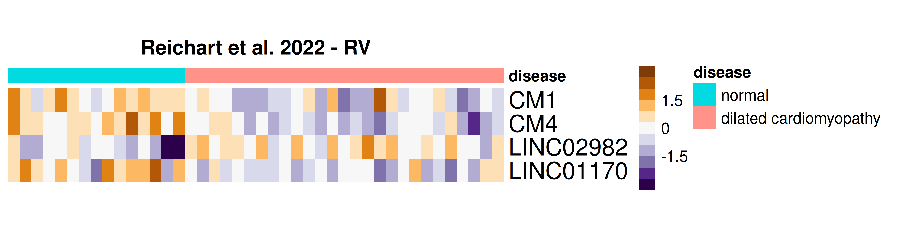
pseudocounts_all_LV <- Seurat2PB(
Reichart_CM_LV,
sample = "donor_id",
cluster = "cell_type"
)
colnames(pseudocounts_all_LV) <- pseudocounts_all_LV$samples$sample
pseudocounts_all_LV <- pseudocounts_all_LV[
,
match(metadata_LV$donor_id, pseudocounts_all_LV$samples$sample)
]
stopifnot(all(metadata_LV$donor_id == pseudocounts_all_LV$samples$sample))
keep_samples_LV <- pseudocounts_all_LV$samples$lib.size > 5e4
pseudocounts_all_LV <- pseudocounts_all_LV[, keep_samples_LV]
metadata_LV <- metadata_LV[
match(pseudocounts_all_LV$samples$sample, metadata_LV$donor_id),
,
drop = FALSE
]
stopifnot(all(metadata_LV$donor_id == pseudocounts_all_LV$samples$sample))
metadata_LV$disease <- factor(
metadata_LV$disease,
levels = c("normal", "dilated cardiomyopathy")
)
design_LV <- model.matrix(~ disease, data = metadata_LV)
keep_genes_LV <- edgeR::filterByExpr(pseudocounts_all_LV, design = design_LV)
pseudocounts_LV <- pseudocounts_all_LV[
keep_genes_LV,
,
keep.lib.sizes = FALSE
]
Reichart_tested_LV <- data.frame(
gene = names(Reichart_lncRNA_features),
feature = unname(Reichart_lncRNA_features),
tested = !is.na(unname(Reichart_lncRNA_features)) &
unname(Reichart_lncRNA_features) %in% rownames(pseudocounts_LV)
)
Reichart_tested_LV gene feature tested
1 CM1 ENSG00000254002 TRUE
2 CM2 ENSG00000228692 TRUE
3 CM4 ENSG00000226900 TRUE
4 LINC02982 ENSG00000215246 TRUE
5 LINC01170 ENSG00000253807 TRUE
6 LINC00561 ENSG00000261206 FALSE
7 H19 <NA> FALSEpseudocounts_LV <- edgeR::normLibSizes(pseudocounts_LV)
pseudocounts_LV <- edgeR::estimateDisp(pseudocounts_LV, design_LV)
fit_LV <- edgeR::glmQLFit(pseudocounts_LV, design_LV, robust = TRUE)
fit_LV <- edgeR::glmQLFTest(fit_LV, coef = 2)
results_Reichart_LV <- as.data.frame(edgeR::topTags(fit_LV, n = Inf)$table)
results_Reichart_LV$gene <- rownames(results_Reichart_LV)
results_Reichart_LV$up_down <- ifelse(
results_Reichart_LV$logFC > 0.5 & results_Reichart_LV$FDR < 0.05, "Increased",
ifelse(
results_Reichart_LV$logFC < -0.5 & results_Reichart_LV$FDR < 0.05,
"Decreased",
"Not significant"
)
)
results_Reichart_LV_lncRNA <- results_Reichart_LV %>%
dplyr::filter(gene %in% names(Reichart_lncRNA_to_display)) %>%
dplyr::mutate(lncRNA = unname(Reichart_lncRNA_to_display[gene]))
write.csv(
results_Reichart_LV_lncRNA,
here::here(output_dir_data, "Reichart_LV_DCM_vs_HC.csv"),
row.names = FALSE
)
reactable(
results_Reichart_LV_lncRNA,
filterable = TRUE,
searchable = TRUE,
showPageSizeOptions = TRUE
)counts_LV <- edgeR::cpm(pseudocounts_LV, log = TRUE)
candidate_order_LV <- unname(Reichart_lncRNA_features[!is.na(Reichart_lncRNA_features)])
candidate_order_LV <- candidate_order_LV[candidate_order_LV %in% rownames(counts_LV)]
counts_LV <- counts_LV[candidate_order_LV, , drop = FALSE]
metadata_matched_LV <- metadata_LV[
match(colnames(counts_LV), metadata_LV$donor_id),
,
drop = FALSE
]
stopifnot(all(colnames(counts_LV) == metadata_matched_LV$donor_id))
order_idx_LV <- order(metadata_matched_LV$disease)
counts_LV <- counts_LV[, order_idx_LV, drop = FALSE]
metadata_matched_LV <- metadata_matched_LV[order_idx_LV, , drop = FALSE]
rownames(counts_LV) <- unname(Reichart_lncRNA_to_display[rownames(counts_LV)])
annotation_col_LV <- data.frame(disease = metadata_matched_LV$disease)
rownames(annotation_col_LV) <- metadata_matched_LV$donor_id
heat_colors <- rev(brewer.pal(11, "PuOr"))
pheatmap::pheatmap(
counts_LV,
color = heat_colors,
cluster_rows = FALSE,
annotation_col = annotation_col_LV,
border_color = NA,
fontsize = 10,
scale = "row",
cluster_cols = FALSE,
fontsize_row = 15,
show_rownames = TRUE,
show_colnames = FALSE,
cellheight = 15,
legend_breaks = c(-1.5, 0, 1.5),
main = "Reichart et al. 2022 - LV"
)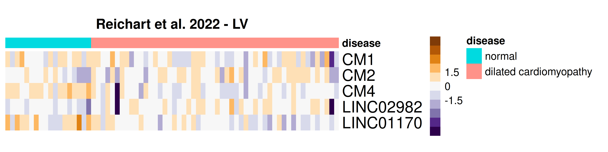
Reichart_box_data_RV <- make_pseudobulk_box_data(
pseudocounts_all_RV,
metadata_RV,
sample_col = "donor_id",
group_col = "disease",
features = Reichart_lncRNA_features
)
Reichart_box_data_RV$group <- factor(
Reichart_box_data_RV$group,
levels = c("normal", "dilated cardiomyopathy")
)
Reichart_stats_RV <- results_Reichart_RV_lncRNA %>%
dplyr::transmute(
gene = lncRNA,
group1 = "normal",
group2 = "dilated cardiomyopathy",
FDR = FDR
)
Reichart_stats_RV <- prepare_fdr_annotations(Reichart_stats_RV, Reichart_box_data_RV)
plot_pseudobulk_boxplots(
Reichart_box_data_RV,
Reichart_stats_RV,
title = "Reichart et al. 2022 - RV",
ncol = 4
)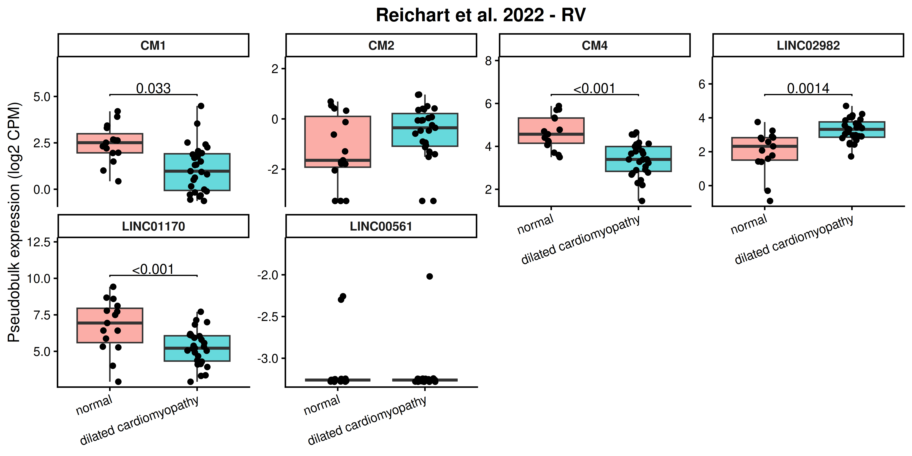
Reichart_box_data_LV <- make_pseudobulk_box_data(
pseudocounts_all_LV,
metadata_LV,
sample_col = "donor_id",
group_col = "disease",
features = Reichart_lncRNA_features
)
Reichart_box_data_LV$group <- factor(
Reichart_box_data_LV$group,
levels = c("normal", "dilated cardiomyopathy")
)
Reichart_stats_LV <- results_Reichart_LV_lncRNA %>%
dplyr::transmute(
gene = lncRNA,
group1 = "normal",
group2 = "dilated cardiomyopathy",
FDR = FDR
)
Reichart_stats_LV <- prepare_fdr_annotations(Reichart_stats_LV, Reichart_box_data_LV)
plot_pseudobulk_boxplots(
Reichart_box_data_LV,
Reichart_stats_LV,
title = "Reichart et al. 2022 - LV",
ncol = 4
)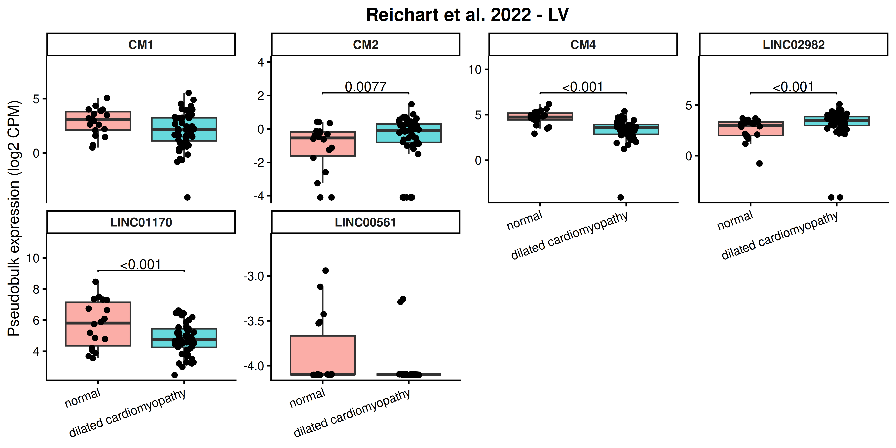
The following panels combine Litvinukova, Koenig, Chaffin and Reichart using the same harmonized cell categories.
public_dataset_order <- c(
"Litvinukova et al. 2020",
"Koenig et al. 2022",
"Chaffin et al. 2022",
"Reichart et al. 2022"
)
combined_lncRNA_dot_data <- dplyr::bind_rows(public_lncRNA_dotplots)
plot_combined_dotplot(
combined_lncRNA_dot_data,
public_dataset_order,
"Candidate lncRNA expression across datasets",
max_pct = 40,
pct_breaks = c(10, 20, 30, 40)
)
combined_marker_dot_data <- dplyr::bind_rows(public_marker_dotplots)
plot_combined_dotplot(
combined_marker_dot_data,
public_dataset_order,
"Cell-type marker expression across datasets",
max_pct = 100,
pct_breaks = c(25, 50, 75, 100)
)
rm(Reichart, Reichart_simple)
sessionInfo()R version 4.5.2 (2025-10-31)
Platform: x86_64-pc-linux-gnu
Running under: Ubuntu 24.04.3 LTS
Matrix products: default
BLAS: /usr/lib/x86_64-linux-gnu/openblas-pthread/libblas.so.3
LAPACK: /usr/lib/x86_64-linux-gnu/openblas-pthread/libopenblasp-r0.3.26.so; LAPACK version 3.12.0
locale:
[1] LC_CTYPE=en_US.UTF-8 LC_NUMERIC=C
[3] LC_TIME=en_US.UTF-8 LC_COLLATE=en_US.UTF-8
[5] LC_MONETARY=en_US.UTF-8 LC_MESSAGES=en_US.UTF-8
[7] LC_PAPER=en_US.UTF-8 LC_NAME=C
[9] LC_ADDRESS=C LC_TELEPHONE=C
[11] LC_MEASUREMENT=en_US.UTF-8 LC_IDENTIFICATION=C
time zone: Etc/UTC
tzcode source: system (glibc)
attached base packages:
[1] stats4 stats graphics grDevices datasets utils methods
[8] base
other attached packages:
[1] qs2_0.1.7 edgeR_4.8.0
[3] limma_3.66.0 ggpubr_1.0.0
[5] igraph_2.2.1 biomaRt_2.66.0
[7] simplifyEnrichment_2.4.0 msigdbr_25.1.1
[9] UpSetR_1.4.0 reactable_0.4.5
[11] rtracklayer_1.70.0 speckle_1.10.0
[13] SeuratDisk_0.0.0.9021 ReactomePA_1.54.0
[15] AnnotationHub_4.0.0 BiocFileCache_3.0.0
[17] dbplyr_2.5.1 org.Hs.eg.db_3.22.0
[19] AnnotationDbi_1.72.0 statmod_1.5.1
[21] patchwork_1.3.2 scater_1.38.0
[23] scuttle_1.20.0 Matrix.utils_0.9.7
[25] RColorBrewer_1.1-3 scales_1.4.0
[27] knitr_1.50 gridExtra_2.3
[29] png_0.1-8 pheatmap_1.0.13
[31] SingleCellExperiment_1.32.0 SummarizedExperiment_1.40.0
[33] Biobase_2.70.0 GenomicRanges_1.62.0
[35] Seqinfo_1.0.0 IRanges_2.44.0
[37] MatrixGenerics_1.22.0 matrixStats_1.5.0
[39] S4Vectors_0.48.0 BiocGenerics_0.56.0
[41] generics_0.1.4 reshape2_1.4.5
[43] lubridate_1.9.4 forcats_1.0.1
[45] stringr_1.6.0 purrr_1.2.0
[47] tidyr_1.3.2 tibble_3.3.0
[49] tidyverse_2.0.0 magrittr_2.0.4
[51] ggplot2_4.0.1 dplyr_1.2.1
[53] scCustomize_3.2.2 Matrix_1.6-5
[55] SeuratObject_5.0.2 Seurat_4.4.0
[57] readxl_1.4.5 readr_2.1.6
[59] here_1.0.2
loaded via a namespace (and not attached):
[1] graph_1.88.0 ica_1.0-3 plotly_4.11.0
[4] Formula_1.2-5 rematch2_2.1.2 tidyselect_1.2.1
[7] bit_4.6.0 doParallel_1.0.17 clue_0.3-66
[10] tm_0.7-16 lattice_0.22-7 rjson_0.2.23
[13] blob_1.2.4 S4Arrays_1.10.1 parallel_4.5.2
[16] cli_3.6.6 ggplotify_0.1.3 goftest_1.2-3
[19] BiocIO_1.20.0 grr_0.9.5 BiocNeighbors_2.4.0
[22] uwot_0.2.4 curl_7.0.0 mime_0.13
[25] evaluate_1.0.5 tidytree_0.4.6 leiden_0.4.3.1
[28] ComplexHeatmap_2.26.0 stringi_1.8.7 backports_1.5.0
[31] XML_3.99-0.20 httpuv_1.6.16 paletteer_1.6.0
[34] rappdirs_0.3.3 splines_4.5.2 ggraph_2.2.2
[37] sctransform_0.4.2 ggbeeswarm_0.7.3 DBI_1.2.3
[40] jquerylib_0.1.4 reactome.db_1.94.0 withr_3.0.2
[43] git2r_0.36.2 systemfonts_1.3.1 rprojroot_2.1.1
[46] enrichplot_1.30.4 lmtest_0.9-40 ggnewscale_0.5.2
[49] tidygraph_1.3.1 BiocManager_1.30.27 htmlwidgets_1.6.4
[52] fs_2.1.0 ggrepel_0.9.6 labeling_0.4.3
[55] SparseArray_1.10.4 cellranger_1.1.0 reticulate_1.44.1
[58] zoo_1.8-14 XVector_0.50.0 timechange_0.3.0
[61] foreach_1.5.2 grid_4.5.2 data.table_1.17.8
[64] ggtree_4.0.1 R.oo_1.27.1 ggiraph_0.9.2
[67] irlba_2.3.5.1 ggrastr_1.0.2 gridGraphics_0.5-1
[70] lazyeval_0.2.2 yaml_2.3.11 survival_3.8-3
[73] scattermore_1.2 BiocVersion_3.22.0 crayon_1.5.3
[76] RcppAnnoy_0.0.22 progressr_0.18.0 tweenr_2.0.3
[79] later_1.4.4 ggridges_0.5.7 codetools_0.2-20
[82] GlobalOptions_0.1.3 KEGGREST_1.50.0 Rtsne_0.17
[85] shape_1.4.6.1 reactR_0.6.1 gdtools_0.4.4
[88] Rsamtools_2.26.0 filelock_1.0.3 pkgconfig_2.0.3
[91] xml2_1.5.1 spatstat.univar_3.1-5 GenomicAlignments_1.46.0
[94] aplot_0.2.9 scatterplot3d_0.3-44 spatstat.sparse_3.1-0
[97] ape_5.8-1 viridisLite_0.4.2 xtable_1.8-4
[100] car_3.1-3 plyr_1.8.9 httr_1.4.7
[103] tools_4.5.2 globals_0.18.0 beeswarm_0.4.0
[106] broom_1.0.11 nlme_3.1-168 hdf5r_1.3.12
[109] crosstalk_1.2.2 assertthat_0.2.1 digest_0.6.39
[112] farver_2.1.2 tzdb_0.5.0 yulab.utils_0.2.2
[115] viridis_0.6.5 glue_1.8.0 cachem_1.1.0
[118] polyclip_1.10-7 Biostrings_2.78.0 parallelly_1.45.1
[121] ScaledMatrix_1.18.0 fontBitstreamVera_0.1.1 carData_3.0-5
[124] pbapply_1.7-4 httr2_1.2.1 spam_2.11-1
[127] gson_0.1.0 graphlayouts_1.2.2 ggsignif_0.6.4
[130] shiny_1.12.0 tidydr_0.0.6 R.utils_2.13.0
[133] RCurl_1.98-1.17 memoise_2.0.1 rmarkdown_2.30
[136] R.methodsS3_1.8.2 future_1.68.0 RANN_2.6.2
[139] fontLiberation_0.1.0 renv_1.1.5 Cairo_1.7-0
[142] stringfish_0.18.0 spatstat.data_3.1-9 rstudioapi_0.17.1
[145] cluster_2.1.8.3 whisker_0.4.1 janitor_2.2.1
[148] spatstat.utils_3.2-0 hms_1.1.4 fitdistrplus_1.2-4
[151] cowplot_1.2.0 colorspace_2.1-2 rlang_1.2.0
[154] dotCall64_1.2 ggforce_0.5.0 circlize_0.4.16
[157] ggtangle_0.0.9 xfun_0.56 simona_1.8.0
[160] iterators_1.0.14 abind_1.4-8 GOSemSim_2.36.0
[163] treeio_1.34.0 bitops_1.0-9 promises_1.5.0
[166] scatterpie_0.2.6 RSQLite_2.4.5 qvalue_2.42.0
[169] fgsea_1.36.0 DelayedArray_0.36.0 GO.db_3.22.0
[172] compiler_4.5.2 prettyunits_1.2.0 beachmat_2.26.0
[175] graphite_1.56.0 listenv_0.10.0 Rcpp_1.1.0
[178] fontquiver_0.2.1 workflowr_1.7.2 BiocSingular_1.26.1
[181] tensor_1.5.1 MASS_7.3-65 progress_1.2.3
[184] BiocParallel_1.44.0 babelgene_22.9 spatstat.random_3.4-3
[187] R6_2.6.1 fastmap_1.2.0 fastmatch_1.1-6
[190] rstatix_1.1.0 vipor_0.4.7 ROCR_1.0-11
[193] rsvd_1.0.5 gtable_0.3.6 KernSmooth_2.23-26
[196] miniUI_0.1.2 deldir_2.0-4 htmltools_0.5.9
[199] RcppParallel_5.1.11-1 bit64_4.6.0-1 spatstat.explore_3.6-0
[202] lifecycle_1.0.5 ggprism_1.0.7 S7_0.2.1
[205] NLP_0.3-2 restfulr_0.0.16 sass_0.4.10
[208] vctrs_0.7.3 Polychrome_1.5.4 slam_0.1-55
[211] spatstat.geom_3.6-1 snakecase_0.11.1 DOSE_4.4.0
[214] ggfun_0.2.0 sp_2.2-0 future.apply_1.20.0
[217] bslib_0.9.0 pillar_1.11.1 prismatic_1.1.2
[220] locfit_1.5-9.12 otel_0.2.0 jsonlite_2.0.0
[223] cigarillo_1.0.0 GetoptLong_1.1.0